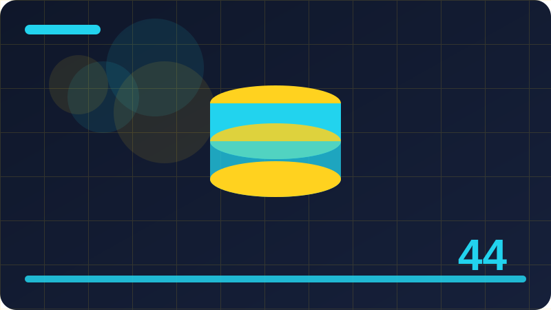

Chapter 44: Performance: Debounce, Throttle and Lazy Work

Section 1: What Performance Feels Like to Users
what performance feels like to users matters because users do not think about code, they think about what happens when they click, type, scroll, or press a key, and your job is to make that result feel calm and reliable. Clear code also helps other people, including teammates and reviewers, understand your intention without needing to ask you what a particular line was supposed to do. Good habits compound over time, so a few careful minutes spent naming, testing, and checking today can prevent hours of confused debugging in a later week. Small, well tested pieces are easier to reuse, so resist building one giant function when two small functions with clear jobs would be clearer and safer.
The key idea is separation: the part that knows about what performance feels like to users should not also try to do everything else, so you can change one piece later without breaking the whole application by accident. Ask yourself what a new user would expect to happen, and design the behaviour around that expectation rather than around what happens to be easiest to code first. Learning by doing beats learning by memorising, so keep experimenting, keep breaking small things safely, and keep fixing them until the behaviour feels obvious to you. Start with the simplest version that could possibly work, test it with real input, and only add complexity when a real example shows that the simple version is not enough.
In the code below you will see a short, runnable example of what performance feels like to users, and the best way to learn from it is to copy it, run it in your browser console or a small page, and then change one small thing at a time. Clear code also helps other people, including teammates and reviewers, understand your intention without needing to ask you what a particular line was supposed to do. Good habits compound over time, so a few careful minutes spent naming, testing, and checking today can prevent hours of confused debugging in a later week.
Another trap is to copy a longer solution before you understand the short one, because a copied solution may work today and still leave you unable to explain, debug, or safely change it tomorrow when requirements shift. Ask yourself what a new user would expect to happen, and design the behaviour around that expectation rather than around what happens to be easiest to code first. Learning by doing beats learning by memorising, so keep experimenting, keep breaking small things safely, and keep fixing them until the behaviour feels obvious to you. Start with the simplest version that could possibly work, test it with real input, and only add complexity when a real example shows that the simple version is not enough.
If you remember one thing from this section, let it be this: keep what performance feels like to users simple, explicit, and testable, and you will be able to grow it later without rewriting everything around it.
function throttle(fn, limit) { let last = 0; return (...args) => { const now = Date.now(); if (now - last >= limit) { last = now; fn(...args); } }; }
const log = throttle(() => console.log('scroll'), 200);
log();Check: In your own words, what does what performance feels like to users mean, and what is one small example where you would use it correctly?
Section 2: Measuring Before You Optimise
In this section we will look at measuring before you optimise slowly, one piece at a time, so you can recognise it in real projects and build a simple version of it yourself without needing a large library. Start with the simplest version that could possibly work, test it with real input, and only add complexity when a real example shows that the simple version is not enough. Keep notes about what worked and what did not, because your own short notes often become the best reference when you return to similar code months later. When you finish a section like this, run the example once more from a clean start, just to be sure it works without leftover state from earlier experiments.
When you trace measuring before you optimise step by step, you will see the same pattern again and again: something changes, your code notices the change, and then it updates the screen or the data in a single, deliberate move. Small, well tested pieces are easier to reuse, so resist building one giant function when two small functions with clear jobs would be clearer and safer. That small discipline saves time later, because a program that is easy to trace is also a program that is easy to fix when a user reports a problem you have not seen before.
As you read the example, pay attention to the names you choose, because clear names make measuring before you optimise much easier to follow, while short, clever names can hide what the code is really doing from your future self. Start with the simplest version that could possibly work, test it with real input, and only add complexity when a real example shows that the simple version is not enough. Keep notes about what worked and what did not, because your own short notes often become the best reference when you return to similar code months later. When you finish a section like this, run the example once more from a clean start, just to be sure it works without leftover state from earlier experiments.
Good code for measuring before you optimise also handles the boring cases well, such as empty input, a missing value, a slow network, or a user who presses the same button twice, because real users will meet those cases even if your first test does not. Small, well tested pieces are easier to reuse, so resist building one giant function when two small functions with clear jobs would be clearer and safer. That small discipline saves time later, because a program that is easy to trace is also a program that is easy to fix when a user reports a problem you have not seen before.
The next time you see measuring before you optimise in someone else's code, try to spot the trigger, the rule, and the result, because recognising that pattern is the skill that transfers from one project to the next.
function lazyLoad(items, index) { return items.slice(0, index + 5); }
console.log(lazyLoad([1, 2, 3, 4, 5, 6, 7, 8], 2));Check: In your own words, what does measuring before you optimise mean, and what is one small example where you would use it correctly?
Section 3: The Main Thread in Plain Words
Beginners sometimes assume the main thread in plain words must be complicated, but at its heart it is just a clear rule: decide what should happen, write that rule down in code, and then test it with real clicks and real data. If you are unsure whether a change is needed, try the page without it first, watch what happens, and let that observation guide the next decision you make. Ask yourself what a new user would expect to happen, and design the behaviour around that expectation rather than around what happens to be easiest to code first. Learning by doing beats learning by memorising, so keep experimenting, keep breaking small things safely, and keep fixing them until the behaviour feels obvious to you.
A useful way to remember the main thread in plain words is to ask three questions every time you use it: what triggers it, what exactly changes, and how will you know the change worked when you test it yourself. When you finish a section like this, run the example once more from a clean start, just to be sure it works without leftover state from earlier experiments. Clear code also helps other people, including teammates and reviewers, understand your intention without needing to ask you what a particular line was supposed to do. Good habits compound over time, so a few careful minutes spent naming, testing, and checking today can prevent hours of confused debugging in a later week.
Try breaking the example on purpose, just once, by passing a different value or removing a line, and then read the error or the unexpected result, because that short experiment teaches more than reading the same paragraph twice. If you are unsure whether a change is needed, try the page without it first, watch what happens, and let that observation guide the next decision you make. Ask yourself what a new user would expect to happen, and design the behaviour around that expectation rather than around what happens to be easiest to code first. Learning by doing beats learning by memorising, so keep experimenting, keep breaking small things safely, and keep fixing them until the behaviour feels obvious to you.
When something goes wrong, resist the urge to add more code immediately, and instead add a simple log, check the value at each step, and confirm which part of the main thread in plain words behaved differently from what you expected. When you finish a section like this, run the example once more from a clean start, just to be sure it works without leftover state from earlier experiments. Clear code also helps other people, including teammates and reviewers, understand your intention without needing to ask you what a particular line was supposed to do. Good habits compound over time, so a few careful minutes spent naming, testing, and checking today can prevent hours of confused debugging in a later week.
Before you move on, take a minute to write down in your own words what the main thread in plain words does and when you would use it, since explaining an idea briefly is one of the fastest ways to discover what you have not yet understood.
let cached = null;
function getTotal(list) { if (cached !== null) return cached; cached = list.reduce((a, b) => a + b, 0); return cached; }
console.log(getTotal([1, 2, 3]));Check: In your own words, what does the main thread in plain words mean, and what is one small example where you would use it correctly?
Section 4: Long Tasks and Janky Scrolling
Think of long tasks and janky scrolling as a habit for your program, a way of keeping one part of the work tidy so the rest of the page does not have to guess what is going on. Good habits compound over time, so a few careful minutes spent naming, testing, and checking today can prevent hours of confused debugging in a later week. Small, well tested pieces are easier to reuse, so resist building one giant function when two small functions with clear jobs would be clearer and safer. That small discipline saves time later, because a program that is easy to trace is also a program that is easy to fix when a user reports a problem you have not seen before.
Many mistakes with long tasks and janky scrolling come from skipping the middle step, because code that jumps straight from a click to a screen update without a clear rule becomes hard to explain, hard to test, and hard to fix later. Learning by doing beats learning by memorising, so keep experimenting, keep breaking small things safely, and keep fixing them until the behaviour feels obvious to you. Start with the simplest version that could possibly work, test it with real input, and only add complexity when a real example shows that the simple version is not enough. Keep notes about what worked and what did not, because your own short notes often become the best reference when you return to similar code months later.
Once the example works, try using it with your own data, such as your own list, your own labels, or your own small page, so long tasks and janky scrolling stops being an abstract lesson and becomes a tool you have actually used. Good habits compound over time, so a few careful minutes spent naming, testing, and checking today can prevent hours of confused debugging in a later week. Small, well tested pieces are easier to reuse, so resist building one giant function when two small functions with clear jobs would be clearer and safer. That small discipline saves time later, because a program that is easy to trace is also a program that is easy to fix when a user reports a problem you have not seen before.
Testing long tasks and janky scrolling does not need a fancy setup at first: a few hand-written cases, a clear expected result for each one, and a habit of running them after every change will catch most problems early. Learning by doing beats learning by memorising, so keep experimenting, keep breaking small things safely, and keep fixing them until the behaviour feels obvious to you. Start with the simplest version that could possibly work, test it with real input, and only add complexity when a real example shows that the simple version is not enough. Keep notes about what worked and what did not, because your own short notes often become the best reference when you return to similar code months later.
In the next section we will build on this idea, so keep your example nearby, because the habits you practise here with long tasks and janky scrolling will make the next idea noticeably easier to learn and to use well.
const memo = new Map();
function double(n) { if (!memo.has(n)) memo.set(n, n * 2); return memo.get(n); }
console.log(double(4));Check: In your own words, what does long tasks and janky scrolling mean, and what is one small example where you would use it correctly?
Section 5: Debounce Explained Simply
When you start working with debounce explained simply, the first thing to notice is that it is not a trick or a special feature, it is a small, practical idea that helps a page behave in a way people can predict and understand. Keep notes about what worked and what did not, because your own short notes often become the best reference when you return to similar code months later. When you finish a section like this, run the example once more from a clean start, just to be sure it works without leftover state from earlier experiments. Clear code also helps other people, including teammates and reviewers, understand your intention without needing to ask you what a particular line was supposed to do.
Underneath the surface, debounce explained simply works by connecting an event or a value to a small decision, and that decision then changes what the user sees, what is stored, or what happens next in a controlled way. That small discipline saves time later, because a program that is easy to trace is also a program that is easy to fix when a user reports a problem you have not seen before. If you are unsure whether a change is needed, try the page without it first, watch what happens, and let that observation guide the next decision you make.
Let us walk through debounce explained simply with a concrete example, because reading about an idea is never quite the same as watching it run, changing one value, and seeing the result change in front of you. Keep notes about what worked and what did not, because your own short notes often become the best reference when you return to similar code months later. When you finish a section like this, run the example once more from a clean start, just to be sure it works without leftover state from earlier experiments. Clear code also helps other people, including teammates and reviewers, understand your intention without needing to ask you what a particular line was supposed to do.
A common mistake with debounce explained simply is to make it do too much at once, so keep the first version deliberately small, get it working for one simple case, and only then add the second case you actually need. That small discipline saves time later, because a program that is easy to trace is also a program that is easy to fix when a user reports a problem you have not seen before. If you are unsure whether a change is needed, try the page without it first, watch what happens, and let that observation guide the next decision you make.
By now debounce explained simply should feel less like a chapter heading and more like a decision you can make in a real project, starting small, naming things clearly, and checking the result by hand. Keep notes about what worked and what did not, because your own short notes often become the best reference when you return to similar code months later.
function debounce(fn, delay) { let timer; return (...args) => { clearTimeout(timer); timer = setTimeout(() => fn(...args), delay); }; }
const save = debounce((v) => console.log('saved', v), 300);
save('hello');Check: In your own words, what does debounce explained simply mean, and what is one small example where you would use it correctly?
Section 6: Throttle Explained Simply
throttle explained simply matters because users do not think about code, they think about what happens when they click, type, scroll, or press a key, and your job is to make that result feel calm and reliable. Ask yourself what a new user would expect to happen, and design the behaviour around that expectation rather than around what happens to be easiest to code first. Learning by doing beats learning by memorising, so keep experimenting, keep breaking small things safely, and keep fixing them until the behaviour feels obvious to you. Start with the simplest version that could possibly work, test it with real input, and only add complexity when a real example shows that the simple version is not enough.
The key idea is separation: the part that knows about throttle explained simply should not also try to do everything else, so you can change one piece later without breaking the whole application by accident. Clear code also helps other people, including teammates and reviewers, understand your intention without needing to ask you what a particular line was supposed to do. Good habits compound over time, so a few careful minutes spent naming, testing, and checking today can prevent hours of confused debugging in a later week. Small, well tested pieces are easier to reuse, so resist building one giant function when two small functions with clear jobs would be clearer and safer.
In the code below you will see a short, runnable example of throttle explained simply, and the best way to learn from it is to copy it, run it in your browser console or a small page, and then change one small thing at a time. Ask yourself what a new user would expect to happen, and design the behaviour around that expectation rather than around what happens to be easiest to code first. Learning by doing beats learning by memorising, so keep experimenting, keep breaking small things safely, and keep fixing them until the behaviour feels obvious to you.
Another trap is to copy a longer solution before you understand the short one, because a copied solution may work today and still leave you unable to explain, debug, or safely change it tomorrow when requirements shift. Clear code also helps other people, including teammates and reviewers, understand your intention without needing to ask you what a particular line was supposed to do. Good habits compound over time, so a few careful minutes spent naming, testing, and checking today can prevent hours of confused debugging in a later week. Small, well tested pieces are easier to reuse, so resist building one giant function when two small functions with clear jobs would be clearer and safer.
If you remember one thing from this section, let it be this: keep throttle explained simply simple, explicit, and testable, and you will be able to grow it later without rewriting everything around it. Ask yourself what a new user would expect to happen, and design the behaviour around that expectation rather than around what happens to be easiest to code first.
function throttle(fn, limit) { let last = 0; return (...args) => { const now = Date.now(); if (now - last >= limit) { last = now; fn(...args); } }; }
const log = throttle(() => console.log('scroll'), 200);
log();Check: In your own words, what does throttle explained simply mean, and what is one small example where you would use it correctly?
Section 7: Debounce Versus Throttle Side by Side
In this section we will look at debounce versus throttle side by side slowly, one piece at a time, so you can recognise it in real projects and build a simple version of it yourself without needing a large library. Small, well tested pieces are easier to reuse, so resist building one giant function when two small functions with clear jobs would be clearer and safer. That small discipline saves time later, because a program that is easy to trace is also a program that is easy to fix when a user reports a problem you have not seen before.
When you trace debounce versus throttle side by side step by step, you will see the same pattern again and again: something changes, your code notices the change, and then it updates the screen or the data in a single, deliberate move. Start with the simplest version that could possibly work, test it with real input, and only add complexity when a real example shows that the simple version is not enough. Keep notes about what worked and what did not, because your own short notes often become the best reference when you return to similar code months later. When you finish a section like this, run the example once more from a clean start, just to be sure it works without leftover state from earlier experiments.
As you read the example, pay attention to the names you choose, because clear names make debounce versus throttle side by side much easier to follow, while short, clever names can hide what the code is really doing from your future self. Small, well tested pieces are easier to reuse, so resist building one giant function when two small functions with clear jobs would be clearer and safer. That small discipline saves time later, because a program that is easy to trace is also a program that is easy to fix when a user reports a problem you have not seen before.
Good code for debounce versus throttle side by side also handles the boring cases well, such as empty input, a missing value, a slow network, or a user who presses the same button twice, because real users will meet those cases even if your first test does not. Start with the simplest version that could possibly work, test it with real input, and only add complexity when a real example shows that the simple version is not enough. Keep notes about what worked and what did not, because your own short notes often become the best reference when you return to similar code months later.
The next time you see debounce versus throttle side by side in someone else's code, try to spot the trigger, the rule, and the result, because recognising that pattern is the skill that transfers from one project to the next. Small, well tested pieces are easier to reuse, so resist building one giant function when two small functions with clear jobs would be clearer and safer.
function lazyLoad(items, index) { return items.slice(0, index + 5); }
console.log(lazyLoad([1, 2, 3, 4, 5, 6, 7, 8], 2));Check: In your own words, what does debounce versus throttle side by side mean, and what is one small example where you would use it correctly?
Section 8: Debouncing a Search Input
Beginners sometimes assume debouncing a search input must be complicated, but at its heart it is just a clear rule: decide what should happen, write that rule down in code, and then test it with real clicks and real data. When you finish a section like this, run the example once more from a clean start, just to be sure it works without leftover state from earlier experiments. Clear code also helps other people, including teammates and reviewers, understand your intention without needing to ask you what a particular line was supposed to do. Good habits compound over time, so a few careful minutes spent naming, testing, and checking today can prevent hours of confused debugging in a later week.
A useful way to remember debouncing a search input is to ask three questions every time you use it: what triggers it, what exactly changes, and how will you know the change worked when you test it yourself. If you are unsure whether a change is needed, try the page without it first, watch what happens, and let that observation guide the next decision you make. Ask yourself what a new user would expect to happen, and design the behaviour around that expectation rather than around what happens to be easiest to code first. Learning by doing beats learning by memorising, so keep experimenting, keep breaking small things safely, and keep fixing them until the behaviour feels obvious to you.
Try breaking the example on purpose, just once, by passing a different value or removing a line, and then read the error or the unexpected result, because that short experiment teaches more than reading the same paragraph twice. When you finish a section like this, run the example once more from a clean start, just to be sure it works without leftover state from earlier experiments. Clear code also helps other people, including teammates and reviewers, understand your intention without needing to ask you what a particular line was supposed to do. Good habits compound over time, so a few careful minutes spent naming, testing, and checking today can prevent hours of confused debugging in a later week.
When something goes wrong, resist the urge to add more code immediately, and instead add a simple log, check the value at each step, and confirm which part of debouncing a search input behaved differently from what you expected. If you are unsure whether a change is needed, try the page without it first, watch what happens, and let that observation guide the next decision you make. Ask yourself what a new user would expect to happen, and design the behaviour around that expectation rather than around what happens to be easiest to code first. Learning by doing beats learning by memorising, so keep experimenting, keep breaking small things safely, and keep fixing them until the behaviour feels obvious to you.
Before you move on, take a minute to write down in your own words what debouncing a search input does and when you would use it, since explaining an idea briefly is one of the fastest ways to discover what you have not yet understood.
let cached = null;
function getTotal(list) { if (cached !== null) return cached; cached = list.reduce((a, b) => a + b, 0); return cached; }
console.log(getTotal([1, 2, 3]));Check: In your own words, what does debouncing a search input mean, and what is one small example where you would use it correctly?
Section 9: Throttling a Scroll Handler
Think of throttling a scroll handler as a habit for your program, a way of keeping one part of the work tidy so the rest of the page does not have to guess what is going on. Learning by doing beats learning by memorising, so keep experimenting, keep breaking small things safely, and keep fixing them until the behaviour feels obvious to you. Start with the simplest version that could possibly work, test it with real input, and only add complexity when a real example shows that the simple version is not enough. Keep notes about what worked and what did not, because your own short notes often become the best reference when you return to similar code months later.
Many mistakes with throttling a scroll handler come from skipping the middle step, because code that jumps straight from a click to a screen update without a clear rule becomes hard to explain, hard to test, and hard to fix later. Good habits compound over time, so a few careful minutes spent naming, testing, and checking today can prevent hours of confused debugging in a later week. Small, well tested pieces are easier to reuse, so resist building one giant function when two small functions with clear jobs would be clearer and safer. That small discipline saves time later, because a program that is easy to trace is also a program that is easy to fix when a user reports a problem you have not seen before.
Once the example works, try using it with your own data, such as your own list, your own labels, or your own small page, so throttling a scroll handler stops being an abstract lesson and becomes a tool you have actually used. Learning by doing beats learning by memorising, so keep experimenting, keep breaking small things safely, and keep fixing them until the behaviour feels obvious to you. Start with the simplest version that could possibly work, test it with real input, and only add complexity when a real example shows that the simple version is not enough. Keep notes about what worked and what did not, because your own short notes often become the best reference when you return to similar code months later.
Testing throttling a scroll handler does not need a fancy setup at first: a few hand-written cases, a clear expected result for each one, and a habit of running them after every change will catch most problems early. Good habits compound over time, so a few careful minutes spent naming, testing, and checking today can prevent hours of confused debugging in a later week. Small, well tested pieces are easier to reuse, so resist building one giant function when two small functions with clear jobs would be clearer and safer. That small discipline saves time later, because a program that is easy to trace is also a program that is easy to fix when a user reports a problem you have not seen before.
In the next section we will build on this idea, so keep your example nearby, because the habits you practise here with throttling a scroll handler will make the next idea noticeably easier to learn and to use well.
const memo = new Map();
function double(n) { if (!memo.has(n)) memo.set(n, n * 2); return memo.get(n); }
console.log(double(4));Check: In your own words, what does throttling a scroll handler mean, and what is one small example where you would use it correctly?
Section 10: Throttling Window Resize Events
When you start working with throttling window resize events, the first thing to notice is that it is not a trick or a special feature, it is a small, practical idea that helps a page behave in a way people can predict and understand. That small discipline saves time later, because a program that is easy to trace is also a program that is easy to fix when a user reports a problem you have not seen before. If you are unsure whether a change is needed, try the page without it first, watch what happens, and let that observation guide the next decision you make.
Underneath the surface, throttling window resize events works by connecting an event or a value to a small decision, and that decision then changes what the user sees, what is stored, or what happens next in a controlled way. Keep notes about what worked and what did not, because your own short notes often become the best reference when you return to similar code months later. When you finish a section like this, run the example once more from a clean start, just to be sure it works without leftover state from earlier experiments. Clear code also helps other people, including teammates and reviewers, understand your intention without needing to ask you what a particular line was supposed to do.
Let us walk through throttling window resize events with a concrete example, because reading about an idea is never quite the same as watching it run, changing one value, and seeing the result change in front of you. That small discipline saves time later, because a program that is easy to trace is also a program that is easy to fix when a user reports a problem you have not seen before. If you are unsure whether a change is needed, try the page without it first, watch what happens, and let that observation guide the next decision you make.
A common mistake with throttling window resize events is to make it do too much at once, so keep the first version deliberately small, get it working for one simple case, and only then add the second case you actually need. Keep notes about what worked and what did not, because your own short notes often become the best reference when you return to similar code months later. When you finish a section like this, run the example once more from a clean start, just to be sure it works without leftover state from earlier experiments. Clear code also helps other people, including teammates and reviewers, understand your intention without needing to ask you what a particular line was supposed to do.
By now throttling window resize events should feel less like a chapter heading and more like a decision you can make in a real project, starting small, naming things clearly, and checking the result by hand.
Check: In your own words, what does throttling window resize events mean, and what is one small example where you would use it correctly?
Section 11: Leading and Trailing Edges
leading and trailing edges matters because users do not think about code, they think about what happens when they click, type, scroll, or press a key, and your job is to make that result feel calm and reliable. Clear code also helps other people, including teammates and reviewers, understand your intention without needing to ask you what a particular line was supposed to do. Good habits compound over time, so a few careful minutes spent naming, testing, and checking today can prevent hours of confused debugging in a later week. Small, well tested pieces are easier to reuse, so resist building one giant function when two small functions with clear jobs would be clearer and safer.
The key idea is separation: the part that knows about leading and trailing edges should not also try to do everything else, so you can change one piece later without breaking the whole application by accident. Ask yourself what a new user would expect to happen, and design the behaviour around that expectation rather than around what happens to be easiest to code first. Learning by doing beats learning by memorising, so keep experimenting, keep breaking small things safely, and keep fixing them until the behaviour feels obvious to you. Start with the simplest version that could possibly work, test it with real input, and only add complexity when a real example shows that the simple version is not enough.
In the code below you will see a short, runnable example of leading and trailing edges, and the best way to learn from it is to copy it, run it in your browser console or a small page, and then change one small thing at a time. Clear code also helps other people, including teammates and reviewers, understand your intention without needing to ask you what a particular line was supposed to do. Good habits compound over time, so a few careful minutes spent naming, testing, and checking today can prevent hours of confused debugging in a later week. Small, well tested pieces are easier to reuse, so resist building one giant function when two small functions with clear jobs would be clearer and safer.
Another trap is to copy a longer solution before you understand the short one, because a copied solution may work today and still leave you unable to explain, debug, or safely change it tomorrow when requirements shift. Ask yourself what a new user would expect to happen, and design the behaviour around that expectation rather than around what happens to be easiest to code first. Learning by doing beats learning by memorising, so keep experimenting, keep breaking small things safely, and keep fixing them until the behaviour feels obvious to you. Start with the simplest version that could possibly work, test it with real input, and only add complexity when a real example shows that the simple version is not enough.
If you remember one thing from this section, let it be this: keep leading and trailing edges simple, explicit, and testable, and you will be able to grow it later without rewriting everything around it.
function throttle(fn, limit) { let last = 0; return (...args) => { const now = Date.now(); if (now - last >= limit) { last = now; fn(...args); } }; }
const log = throttle(() => console.log('scroll'), 200);
log();Check: In your own words, what does leading and trailing edges mean, and what is one small example where you would use it correctly?
Section 12: Cancelling a Debounced Call
In this section we will look at cancelling a debounced call slowly, one piece at a time, so you can recognise it in real projects and build a simple version of it yourself without needing a large library. Start with the simplest version that could possibly work, test it with real input, and only add complexity when a real example shows that the simple version is not enough. Keep notes about what worked and what did not, because your own short notes often become the best reference when you return to similar code months later. When you finish a section like this, run the example once more from a clean start, just to be sure it works without leftover state from earlier experiments.
When you trace cancelling a debounced call step by step, you will see the same pattern again and again: something changes, your code notices the change, and then it updates the screen or the data in a single, deliberate move. Small, well tested pieces are easier to reuse, so resist building one giant function when two small functions with clear jobs would be clearer and safer. That small discipline saves time later, because a program that is easy to trace is also a program that is easy to fix when a user reports a problem you have not seen before.
As you read the example, pay attention to the names you choose, because clear names make cancelling a debounced call much easier to follow, while short, clever names can hide what the code is really doing from your future self. Start with the simplest version that could possibly work, test it with real input, and only add complexity when a real example shows that the simple version is not enough. Keep notes about what worked and what did not, because your own short notes often become the best reference when you return to similar code months later. When you finish a section like this, run the example once more from a clean start, just to be sure it works without leftover state from earlier experiments.
Good code for cancelling a debounced call also handles the boring cases well, such as empty input, a missing value, a slow network, or a user who presses the same button twice, because real users will meet those cases even if your first test does not. Small, well tested pieces are easier to reuse, so resist building one giant function when two small functions with clear jobs would be clearer and safer. That small discipline saves time later, because a program that is easy to trace is also a program that is easy to fix when a user reports a problem you have not seen before.
The next time you see cancelling a debounced call in someone else's code, try to spot the trigger, the rule, and the result, because recognising that pattern is the skill that transfers from one project to the next.
function lazyLoad(items, index) { return items.slice(0, index + 5); }
console.log(lazyLoad([1, 2, 3, 4, 5, 6, 7, 8], 2));Check: In your own words, what does cancelling a debounced call mean, and what is one small example where you would use it correctly?
Section 13: Cancelling a Throttled Call
Beginners sometimes assume cancelling a throttled call must be complicated, but at its heart it is just a clear rule: decide what should happen, write that rule down in code, and then test it with real clicks and real data. If you are unsure whether a change is needed, try the page without it first, watch what happens, and let that observation guide the next decision you make. Ask yourself what a new user would expect to happen, and design the behaviour around that expectation rather than around what happens to be easiest to code first. Learning by doing beats learning by memorising, so keep experimenting, keep breaking small things safely, and keep fixing them until the behaviour feels obvious to you.
A useful way to remember cancelling a throttled call is to ask three questions every time you use it: what triggers it, what exactly changes, and how will you know the change worked when you test it yourself. When you finish a section like this, run the example once more from a clean start, just to be sure it works without leftover state from earlier experiments. Clear code also helps other people, including teammates and reviewers, understand your intention without needing to ask you what a particular line was supposed to do. Good habits compound over time, so a few careful minutes spent naming, testing, and checking today can prevent hours of confused debugging in a later week.
Try breaking the example on purpose, just once, by passing a different value or removing a line, and then read the error or the unexpected result, because that short experiment teaches more than reading the same paragraph twice. If you are unsure whether a change is needed, try the page without it first, watch what happens, and let that observation guide the next decision you make. Ask yourself what a new user would expect to happen, and design the behaviour around that expectation rather than around what happens to be easiest to code first. Learning by doing beats learning by memorising, so keep experimenting, keep breaking small things safely, and keep fixing them until the behaviour feels obvious to you.
When something goes wrong, resist the urge to add more code immediately, and instead add a simple log, check the value at each step, and confirm which part of cancelling a throttled call behaved differently from what you expected. When you finish a section like this, run the example once more from a clean start, just to be sure it works without leftover state from earlier experiments. Clear code also helps other people, including teammates and reviewers, understand your intention without needing to ask you what a particular line was supposed to do. Good habits compound over time, so a few careful minutes spent naming, testing, and checking today can prevent hours of confused debugging in a later week.
Before you move on, take a minute to write down in your own words what cancelling a throttled call does and when you would use it, since explaining an idea briefly is one of the fastest ways to discover what you have not yet understood.
let cached = null;
function getTotal(list) { if (cached !== null) return cached; cached = list.reduce((a, b) => a + b, 0); return cached; }
console.log(getTotal([1, 2, 3]));Check: In your own words, what does cancelling a throttled call mean, and what is one small example where you would use it correctly?
Section 14: A Tiny Debounce Function
Think of a tiny debounce function as a habit for your program, a way of keeping one part of the work tidy so the rest of the page does not have to guess what is going on. Good habits compound over time, so a few careful minutes spent naming, testing, and checking today can prevent hours of confused debugging in a later week. Small, well tested pieces are easier to reuse, so resist building one giant function when two small functions with clear jobs would be clearer and safer. That small discipline saves time later, because a program that is easy to trace is also a program that is easy to fix when a user reports a problem you have not seen before.
Many mistakes with a tiny debounce function come from skipping the middle step, because code that jumps straight from a click to a screen update without a clear rule becomes hard to explain, hard to test, and hard to fix later. Learning by doing beats learning by memorising, so keep experimenting, keep breaking small things safely, and keep fixing them until the behaviour feels obvious to you. Start with the simplest version that could possibly work, test it with real input, and only add complexity when a real example shows that the simple version is not enough. Keep notes about what worked and what did not, because your own short notes often become the best reference when you return to similar code months later.
Once the example works, try using it with your own data, such as your own list, your own labels, or your own small page, so a tiny debounce function stops being an abstract lesson and becomes a tool you have actually used. Good habits compound over time, so a few careful minutes spent naming, testing, and checking today can prevent hours of confused debugging in a later week. Small, well tested pieces are easier to reuse, so resist building one giant function when two small functions with clear jobs would be clearer and safer. That small discipline saves time later, because a program that is easy to trace is also a program that is easy to fix when a user reports a problem you have not seen before.
Testing a tiny debounce function does not need a fancy setup at first: a few hand-written cases, a clear expected result for each one, and a habit of running them after every change will catch most problems early. Learning by doing beats learning by memorising, so keep experimenting, keep breaking small things safely, and keep fixing them until the behaviour feels obvious to you. Start with the simplest version that could possibly work, test it with real input, and only add complexity when a real example shows that the simple version is not enough. Keep notes about what worked and what did not, because your own short notes often become the best reference when you return to similar code months later.
In the next section we will build on this idea, so keep your example nearby, because the habits you practise here with a tiny debounce function will make the next idea noticeably easier to learn and to use well.
const memo = new Map();
function double(n) { if (!memo.has(n)) memo.set(n, n * 2); return memo.get(n); }
console.log(double(4));Check: In your own words, what does a tiny debounce function mean, and what is one small example where you would use it correctly?
Section 15: A Tiny Throttle Function
When you start working with a tiny throttle function, the first thing to notice is that it is not a trick or a special feature, it is a small, practical idea that helps a page behave in a way people can predict and understand. Keep notes about what worked and what did not, because your own short notes often become the best reference when you return to similar code months later. When you finish a section like this, run the example once more from a clean start, just to be sure it works without leftover state from earlier experiments. Clear code also helps other people, including teammates and reviewers, understand your intention without needing to ask you what a particular line was supposed to do.
Underneath the surface, a tiny throttle function works by connecting an event or a value to a small decision, and that decision then changes what the user sees, what is stored, or what happens next in a controlled way. That small discipline saves time later, because a program that is easy to trace is also a program that is easy to fix when a user reports a problem you have not seen before. If you are unsure whether a change is needed, try the page without it first, watch what happens, and let that observation guide the next decision you make.
Let us walk through a tiny throttle function with a concrete example, because reading about an idea is never quite the same as watching it run, changing one value, and seeing the result change in front of you. Keep notes about what worked and what did not, because your own short notes often become the best reference when you return to similar code months later. When you finish a section like this, run the example once more from a clean start, just to be sure it works without leftover state from earlier experiments. Clear code also helps other people, including teammates and reviewers, understand your intention without needing to ask you what a particular line was supposed to do.
A common mistake with a tiny throttle function is to make it do too much at once, so keep the first version deliberately small, get it working for one simple case, and only then add the second case you actually need. That small discipline saves time later, because a program that is easy to trace is also a program that is easy to fix when a user reports a problem you have not seen before. If you are unsure whether a change is needed, try the page without it first, watch what happens, and let that observation guide the next decision you make.
By now a tiny throttle function should feel less like a chapter heading and more like a decision you can make in a real project, starting small, naming things clearly, and checking the result by hand. Keep notes about what worked and what did not, because your own short notes often become the best reference when you return to similar code months later.
function debounce(fn, delay) { let timer; return (...args) => { clearTimeout(timer); timer = setTimeout(() => fn(...args), delay); }; }
const save = debounce((v) => console.log('saved', v), 300);
save('hello');Check: In your own words, what does a tiny throttle function mean, and what is one small example where you would use it correctly?
Section 16: Testing Debounce with a Timer
testing debounce with a timer matters because users do not think about code, they think about what happens when they click, type, scroll, or press a key, and your job is to make that result feel calm and reliable. Ask yourself what a new user would expect to happen, and design the behaviour around that expectation rather than around what happens to be easiest to code first. Learning by doing beats learning by memorising, so keep experimenting, keep breaking small things safely, and keep fixing them until the behaviour feels obvious to you. Start with the simplest version that could possibly work, test it with real input, and only add complexity when a real example shows that the simple version is not enough.
The key idea is separation: the part that knows about testing debounce with a timer should not also try to do everything else, so you can change one piece later without breaking the whole application by accident. Clear code also helps other people, including teammates and reviewers, understand your intention without needing to ask you what a particular line was supposed to do. Good habits compound over time, so a few careful minutes spent naming, testing, and checking today can prevent hours of confused debugging in a later week. Small, well tested pieces are easier to reuse, so resist building one giant function when two small functions with clear jobs would be clearer and safer.
In the code below you will see a short, runnable example of testing debounce with a timer, and the best way to learn from it is to copy it, run it in your browser console or a small page, and then change one small thing at a time. Ask yourself what a new user would expect to happen, and design the behaviour around that expectation rather than around what happens to be easiest to code first. Learning by doing beats learning by memorising, so keep experimenting, keep breaking small things safely, and keep fixing them until the behaviour feels obvious to you.
Another trap is to copy a longer solution before you understand the short one, because a copied solution may work today and still leave you unable to explain, debug, or safely change it tomorrow when requirements shift. Clear code also helps other people, including teammates and reviewers, understand your intention without needing to ask you what a particular line was supposed to do. Good habits compound over time, so a few careful minutes spent naming, testing, and checking today can prevent hours of confused debugging in a later week. Small, well tested pieces are easier to reuse, so resist building one giant function when two small functions with clear jobs would be clearer and safer.
If you remember one thing from this section, let it be this: keep testing debounce with a timer simple, explicit, and testable, and you will be able to grow it later without rewriting everything around it.
function throttle(fn, limit) { let last = 0; return (...args) => { const now = Date.now(); if (now - last >= limit) { last = now; fn(...args); } }; }
const log = throttle(() => console.log('scroll'), 200);
log();Check: In your own words, what does testing debounce with a timer mean, and what is one small example where you would use it correctly?
Section 17: Testing Throttle by Counting Calls
In this section we will look at testing throttle by counting calls slowly, one piece at a time, so you can recognise it in real projects and build a simple version of it yourself without needing a large library. Small, well tested pieces are easier to reuse, so resist building one giant function when two small functions with clear jobs would be clearer and safer. That small discipline saves time later, because a program that is easy to trace is also a program that is easy to fix when a user reports a problem you have not seen before. If you are unsure whether a change is needed, try the page without it first, watch what happens, and let that observation guide the next decision you make.
When you trace testing throttle by counting calls step by step, you will see the same pattern again and again: something changes, your code notices the change, and then it updates the screen or the data in a single, deliberate move. Start with the simplest version that could possibly work, test it with real input, and only add complexity when a real example shows that the simple version is not enough. Keep notes about what worked and what did not, because your own short notes often become the best reference when you return to similar code months later. When you finish a section like this, run the example once more from a clean start, just to be sure it works without leftover state from earlier experiments.
As you read the example, pay attention to the names you choose, because clear names make testing throttle by counting calls much easier to follow, while short, clever names can hide what the code is really doing from your future self. Small, well tested pieces are easier to reuse, so resist building one giant function when two small functions with clear jobs would be clearer and safer. That small discipline saves time later, because a program that is easy to trace is also a program that is easy to fix when a user reports a problem you have not seen before.
Good code for testing throttle by counting calls also handles the boring cases well, such as empty input, a missing value, a slow network, or a user who presses the same button twice, because real users will meet those cases even if your first test does not. Start with the simplest version that could possibly work, test it with real input, and only add complexity when a real example shows that the simple version is not enough. Keep notes about what worked and what did not, because your own short notes often become the best reference when you return to similar code months later.
The next time you see testing throttle by counting calls in someone else's code, try to spot the trigger, the rule, and the result, because recognising that pattern is the skill that transfers from one project to the next.
function lazyLoad(items, index) { return items.slice(0, index + 5); }
console.log(lazyLoad([1, 2, 3, 4, 5, 6, 7, 8], 2));Check: In your own words, what does testing throttle by counting calls mean, and what is one small example where you would use it correctly?
Section 18: Choosing a Delay That Feels Right
Beginners sometimes assume choosing a delay that feels right must be complicated, but at its heart it is just a clear rule: decide what should happen, write that rule down in code, and then test it with real clicks and real data. When you finish a section like this, run the example once more from a clean start, just to be sure it works without leftover state from earlier experiments. Clear code also helps other people, including teammates and reviewers, understand your intention without needing to ask you what a particular line was supposed to do. Good habits compound over time, so a few careful minutes spent naming, testing, and checking today can prevent hours of confused debugging in a later week.
A useful way to remember choosing a delay that feels right is to ask three questions every time you use it: what triggers it, what exactly changes, and how will you know the change worked when you test it yourself. If you are unsure whether a change is needed, try the page without it first, watch what happens, and let that observation guide the next decision you make. Ask yourself what a new user would expect to happen, and design the behaviour around that expectation rather than around what happens to be easiest to code first. Learning by doing beats learning by memorising, so keep experimenting, keep breaking small things safely, and keep fixing them until the behaviour feels obvious to you.
Try breaking the example on purpose, just once, by passing a different value or removing a line, and then read the error or the unexpected result, because that short experiment teaches more than reading the same paragraph twice. When you finish a section like this, run the example once more from a clean start, just to be sure it works without leftover state from earlier experiments. Clear code also helps other people, including teammates and reviewers, understand your intention without needing to ask you what a particular line was supposed to do. Good habits compound over time, so a few careful minutes spent naming, testing, and checking today can prevent hours of confused debugging in a later week.
When something goes wrong, resist the urge to add more code immediately, and instead add a simple log, check the value at each step, and confirm which part of choosing a delay that feels right behaved differently from what you expected. If you are unsure whether a change is needed, try the page without it first, watch what happens, and let that observation guide the next decision you make. Ask yourself what a new user would expect to happen, and design the behaviour around that expectation rather than around what happens to be easiest to code first. Learning by doing beats learning by memorising, so keep experimenting, keep breaking small things safely, and keep fixing them until the behaviour feels obvious to you.
Before you move on, take a minute to write down in your own words what choosing a delay that feels right does and when you would use it, since explaining an idea briefly is one of the fastest ways to discover what you have not yet understood.
let cached = null;
function getTotal(list) { if (cached !== null) return cached; cached = list.reduce((a, b) => a + b, 0); return cached; }
console.log(getTotal([1, 2, 3]));Check: In your own words, what does choosing a delay that feels right mean, and what is one small example where you would use it correctly?
Section 19: Search Suggestions Without Flooding
Think of search suggestions without flooding as a habit for your program, a way of keeping one part of the work tidy so the rest of the page does not have to guess what is going on. Learning by doing beats learning by memorising, so keep experimenting, keep breaking small things safely, and keep fixing them until the behaviour feels obvious to you. Start with the simplest version that could possibly work, test it with real input, and only add complexity when a real example shows that the simple version is not enough. Keep notes about what worked and what did not, because your own short notes often become the best reference when you return to similar code months later.
Many mistakes with search suggestions without flooding come from skipping the middle step, because code that jumps straight from a click to a screen update without a clear rule becomes hard to explain, hard to test, and hard to fix later. Good habits compound over time, so a few careful minutes spent naming, testing, and checking today can prevent hours of confused debugging in a later week. Small, well tested pieces are easier to reuse, so resist building one giant function when two small functions with clear jobs would be clearer and safer. That small discipline saves time later, because a program that is easy to trace is also a program that is easy to fix when a user reports a problem you have not seen before.
Once the example works, try using it with your own data, such as your own list, your own labels, or your own small page, so search suggestions without flooding stops being an abstract lesson and becomes a tool you have actually used. Learning by doing beats learning by memorising, so keep experimenting, keep breaking small things safely, and keep fixing them until the behaviour feels obvious to you. Start with the simplest version that could possibly work, test it with real input, and only add complexity when a real example shows that the simple version is not enough. Keep notes about what worked and what did not, because your own short notes often become the best reference when you return to similar code months later.
Testing search suggestions without flooding does not need a fancy setup at first: a few hand-written cases, a clear expected result for each one, and a habit of running them after every change will catch most problems early. Good habits compound over time, so a few careful minutes spent naming, testing, and checking today can prevent hours of confused debugging in a later week. Small, well tested pieces are easier to reuse, so resist building one giant function when two small functions with clear jobs would be clearer and safer. That small discipline saves time later, because a program that is easy to trace is also a program that is easy to fix when a user reports a problem you have not seen before.
In the next section we will build on this idea, so keep your example nearby, because the habits you practise here with search suggestions without flooding will make the next idea noticeably easier to learn and to use well.
const memo = new Map();
function double(n) { if (!memo.has(n)) memo.set(n, n * 2); return memo.get(n); }
console.log(double(4));Check: In your own words, what does search suggestions without flooding mean, and what is one small example where you would use it correctly?
Section 20: Autosave Without Saving Every Keystroke
When you start working with autosave without saving every keystroke, the first thing to notice is that it is not a trick or a special feature, it is a small, practical idea that helps a page behave in a way people can predict and understand. That small discipline saves time later, because a program that is easy to trace is also a program that is easy to fix when a user reports a problem you have not seen before. If you are unsure whether a change is needed, try the page without it first, watch what happens, and let that observation guide the next decision you make.
Underneath the surface, autosave without saving every keystroke works by connecting an event or a value to a small decision, and that decision then changes what the user sees, what is stored, or what happens next in a controlled way. Keep notes about what worked and what did not, because your own short notes often become the best reference when you return to similar code months later. When you finish a section like this, run the example once more from a clean start, just to be sure it works without leftover state from earlier experiments. Clear code also helps other people, including teammates and reviewers, understand your intention without needing to ask you what a particular line was supposed to do.
Let us walk through autosave without saving every keystroke with a concrete example, because reading about an idea is never quite the same as watching it run, changing one value, and seeing the result change in front of you. That small discipline saves time later, because a program that is easy to trace is also a program that is easy to fix when a user reports a problem you have not seen before. If you are unsure whether a change is needed, try the page without it first, watch what happens, and let that observation guide the next decision you make.
A common mistake with autosave without saving every keystroke is to make it do too much at once, so keep the first version deliberately small, get it working for one simple case, and only then add the second case you actually need. Keep notes about what worked and what did not, because your own short notes often become the best reference when you return to similar code months later. When you finish a section like this, run the example once more from a clean start, just to be sure it works without leftover state from earlier experiments. Clear code also helps other people, including teammates and reviewers, understand your intention without needing to ask you what a particular line was supposed to do.
By now autosave without saving every keystroke should feel less like a chapter heading and more like a decision you can make in a real project, starting small, naming things clearly, and checking the result by hand.
Check: In your own words, what does autosave without saving every keystroke mean, and what is one small example where you would use it correctly?
Section 21: Infinite Scroll Done Carefully
infinite scroll done carefully matters because users do not think about code, they think about what happens when they click, type, scroll, or press a key, and your job is to make that result feel calm and reliable. Clear code also helps other people, including teammates and reviewers, understand your intention without needing to ask you what a particular line was supposed to do. Good habits compound over time, so a few careful minutes spent naming, testing, and checking today can prevent hours of confused debugging in a later week. Small, well tested pieces are easier to reuse, so resist building one giant function when two small functions with clear jobs would be clearer and safer.
The key idea is separation: the part that knows about infinite scroll done carefully should not also try to do everything else, so you can change one piece later without breaking the whole application by accident. Ask yourself what a new user would expect to happen, and design the behaviour around that expectation rather than around what happens to be easiest to code first. Learning by doing beats learning by memorising, so keep experimenting, keep breaking small things safely, and keep fixing them until the behaviour feels obvious to you. Start with the simplest version that could possibly work, test it with real input, and only add complexity when a real example shows that the simple version is not enough.
In the code below you will see a short, runnable example of infinite scroll done carefully, and the best way to learn from it is to copy it, run it in your browser console or a small page, and then change one small thing at a time. Clear code also helps other people, including teammates and reviewers, understand your intention without needing to ask you what a particular line was supposed to do. Good habits compound over time, so a few careful minutes spent naming, testing, and checking today can prevent hours of confused debugging in a later week. Small, well tested pieces are easier to reuse, so resist building one giant function when two small functions with clear jobs would be clearer and safer.
Another trap is to copy a longer solution before you understand the short one, because a copied solution may work today and still leave you unable to explain, debug, or safely change it tomorrow when requirements shift. Ask yourself what a new user would expect to happen, and design the behaviour around that expectation rather than around what happens to be easiest to code first. Learning by doing beats learning by memorising, so keep experimenting, keep breaking small things safely, and keep fixing them until the behaviour feels obvious to you. Start with the simplest version that could possibly work, test it with real input, and only add complexity when a real example shows that the simple version is not enough.
If you remember one thing from this section, let it be this: keep infinite scroll done carefully simple, explicit, and testable, and you will be able to grow it later without rewriting everything around it.
function throttle(fn, limit) { let last = 0; return (...args) => { const now = Date.now(); if (now - last >= limit) { last = now; fn(...args); } }; }
const log = throttle(() => console.log('scroll'), 200);
log();Check: In your own words, what does infinite scroll done carefully mean, and what is one small example where you would use it correctly?
Section 22: Lazy Loading Images on Demand
In this section we will look at lazy loading images on demand slowly, one piece at a time, so you can recognise it in real projects and build a simple version of it yourself without needing a large library. Start with the simplest version that could possibly work, test it with real input, and only add complexity when a real example shows that the simple version is not enough. Keep notes about what worked and what did not, because your own short notes often become the best reference when you return to similar code months later. When you finish a section like this, run the example once more from a clean start, just to be sure it works without leftover state from earlier experiments.
When you trace lazy loading images on demand step by step, you will see the same pattern again and again: something changes, your code notices the change, and then it updates the screen or the data in a single, deliberate move. Small, well tested pieces are easier to reuse, so resist building one giant function when two small functions with clear jobs would be clearer and safer. That small discipline saves time later, because a program that is easy to trace is also a program that is easy to fix when a user reports a problem you have not seen before.
As you read the example, pay attention to the names you choose, because clear names make lazy loading images on demand much easier to follow, while short, clever names can hide what the code is really doing from your future self. Start with the simplest version that could possibly work, test it with real input, and only add complexity when a real example shows that the simple version is not enough. Keep notes about what worked and what did not, because your own short notes often become the best reference when you return to similar code months later. When you finish a section like this, run the example once more from a clean start, just to be sure it works without leftover state from earlier experiments.
Good code for lazy loading images on demand also handles the boring cases well, such as empty input, a missing value, a slow network, or a user who presses the same button twice, because real users will meet those cases even if your first test does not. Small, well tested pieces are easier to reuse, so resist building one giant function when two small functions with clear jobs would be clearer and safer. That small discipline saves time later, because a program that is easy to trace is also a program that is easy to fix when a user reports a problem you have not seen before.
The next time you see lazy loading images on demand in someone else's code, try to spot the trigger, the rule, and the result, because recognising that pattern is the skill that transfers from one project to the next.
function lazyLoad(items, index) { return items.slice(0, index + 5); }
console.log(lazyLoad([1, 2, 3, 4, 5, 6, 7, 8], 2));Check: In your own words, what does lazy loading images on demand mean, and what is one small example where you would use it correctly?
Section 23: Lazy Loading Views and Modules
Beginners sometimes assume lazy loading views and modules must be complicated, but at its heart it is just a clear rule: decide what should happen, write that rule down in code, and then test it with real clicks and real data. If you are unsure whether a change is needed, try the page without it first, watch what happens, and let that observation guide the next decision you make. Ask yourself what a new user would expect to happen, and design the behaviour around that expectation rather than around what happens to be easiest to code first. Learning by doing beats learning by memorising, so keep experimenting, keep breaking small things safely, and keep fixing them until the behaviour feels obvious to you.
A useful way to remember lazy loading views and modules is to ask three questions every time you use it: what triggers it, what exactly changes, and how will you know the change worked when you test it yourself. When you finish a section like this, run the example once more from a clean start, just to be sure it works without leftover state from earlier experiments. Clear code also helps other people, including teammates and reviewers, understand your intention without needing to ask you what a particular line was supposed to do. Good habits compound over time, so a few careful minutes spent naming, testing, and checking today can prevent hours of confused debugging in a later week.
Try breaking the example on purpose, just once, by passing a different value or removing a line, and then read the error or the unexpected result, because that short experiment teaches more than reading the same paragraph twice. If you are unsure whether a change is needed, try the page without it first, watch what happens, and let that observation guide the next decision you make. Ask yourself what a new user would expect to happen, and design the behaviour around that expectation rather than around what happens to be easiest to code first. Learning by doing beats learning by memorising, so keep experimenting, keep breaking small things safely, and keep fixing them until the behaviour feels obvious to you.
When something goes wrong, resist the urge to add more code immediately, and instead add a simple log, check the value at each step, and confirm which part of lazy loading views and modules behaved differently from what you expected. When you finish a section like this, run the example once more from a clean start, just to be sure it works without leftover state from earlier experiments. Clear code also helps other people, including teammates and reviewers, understand your intention without needing to ask you what a particular line was supposed to do. Good habits compound over time, so a few careful minutes spent naming, testing, and checking today can prevent hours of confused debugging in a later week.
Before you move on, take a minute to write down in your own words what lazy loading views and modules does and when you would use it, since explaining an idea briefly is one of the fastest ways to discover what you have not yet understood.
let cached = null;
function getTotal(list) { if (cached !== null) return cached; cached = list.reduce((a, b) => a + b, 0); return cached; }
console.log(getTotal([1, 2, 3]));Check: In your own words, what does lazy loading views and modules mean, and what is one small example where you would use it correctly?
Section 24: Intersection Observer in Plain Words
Think of intersection observer in plain words as a habit for your program, a way of keeping one part of the work tidy so the rest of the page does not have to guess what is going on. Good habits compound over time, so a few careful minutes spent naming, testing, and checking today can prevent hours of confused debugging in a later week. Small, well tested pieces are easier to reuse, so resist building one giant function when two small functions with clear jobs would be clearer and safer. That small discipline saves time later, because a program that is easy to trace is also a program that is easy to fix when a user reports a problem you have not seen before.
Many mistakes with intersection observer in plain words come from skipping the middle step, because code that jumps straight from a click to a screen update without a clear rule becomes hard to explain, hard to test, and hard to fix later. Learning by doing beats learning by memorising, so keep experimenting, keep breaking small things safely, and keep fixing them until the behaviour feels obvious to you. Start with the simplest version that could possibly work, test it with real input, and only add complexity when a real example shows that the simple version is not enough. Keep notes about what worked and what did not, because your own short notes often become the best reference when you return to similar code months later.
Once the example works, try using it with your own data, such as your own list, your own labels, or your own small page, so intersection observer in plain words stops being an abstract lesson and becomes a tool you have actually used. Good habits compound over time, so a few careful minutes spent naming, testing, and checking today can prevent hours of confused debugging in a later week. Small, well tested pieces are easier to reuse, so resist building one giant function when two small functions with clear jobs would be clearer and safer. That small discipline saves time later, because a program that is easy to trace is also a program that is easy to fix when a user reports a problem you have not seen before.
Testing intersection observer in plain words does not need a fancy setup at first: a few hand-written cases, a clear expected result for each one, and a habit of running them after every change will catch most problems early. Learning by doing beats learning by memorising, so keep experimenting, keep breaking small things safely, and keep fixing them until the behaviour feels obvious to you. Start with the simplest version that could possibly work, test it with real input, and only add complexity when a real example shows that the simple version is not enough. Keep notes about what worked and what did not, because your own short notes often become the best reference when you return to similar code months later.
In the next section we will build on this idea, so keep your example nearby, because the habits you practise here with intersection observer in plain words will make the next idea noticeably easier to learn and to use well.
const memo = new Map();
function double(n) { if (!memo.has(n)) memo.set(n, n * 2); return memo.get(n); }
console.log(double(4));Check: In your own words, what does intersection observer in plain words mean, and what is one small example where you would use it correctly?
Section 25: Loading Work Only When Visible
When you start working with loading work only when visible, the first thing to notice is that it is not a trick or a special feature, it is a small, practical idea that helps a page behave in a way people can predict and understand. Keep notes about what worked and what did not, because your own short notes often become the best reference when you return to similar code months later. When you finish a section like this, run the example once more from a clean start, just to be sure it works without leftover state from earlier experiments.
Underneath the surface, loading work only when visible works by connecting an event or a value to a small decision, and that decision then changes what the user sees, what is stored, or what happens next in a controlled way. That small discipline saves time later, because a program that is easy to trace is also a program that is easy to fix when a user reports a problem you have not seen before. If you are unsure whether a change is needed, try the page without it first, watch what happens, and let that observation guide the next decision you make.
Let us walk through loading work only when visible with a concrete example, because reading about an idea is never quite the same as watching it run, changing one value, and seeing the result change in front of you. Keep notes about what worked and what did not, because your own short notes often become the best reference when you return to similar code months later. When you finish a section like this, run the example once more from a clean start, just to be sure it works without leftover state from earlier experiments. Clear code also helps other people, including teammates and reviewers, understand your intention without needing to ask you what a particular line was supposed to do.
A common mistake with loading work only when visible is to make it do too much at once, so keep the first version deliberately small, get it working for one simple case, and only then add the second case you actually need. That small discipline saves time later, because a program that is easy to trace is also a program that is easy to fix when a user reports a problem you have not seen before. If you are unsure whether a change is needed, try the page without it first, watch what happens, and let that observation guide the next decision you make.
By now loading work only when visible should feel less like a chapter heading and more like a decision you can make in a real project, starting small, naming things clearly, and checking the result by hand. Keep notes about what worked and what did not, because your own short notes often become the best reference when you return to similar code months later.
function debounce(fn, delay) { let timer; return (...args) => { clearTimeout(timer); timer = setTimeout(() => fn(...args), delay); }; }
const save = debounce((v) => console.log('saved', v), 300);
save('hello');Check: In your own words, what does loading work only when visible mean, and what is one small example where you would use it correctly?
Section 26: Splitting Work into Small Chunks
splitting work into small chunks matters because users do not think about code, they think about what happens when they click, type, scroll, or press a key, and your job is to make that result feel calm and reliable. Ask yourself what a new user would expect to happen, and design the behaviour around that expectation rather than around what happens to be easiest to code first. Learning by doing beats learning by memorising, so keep experimenting, keep breaking small things safely, and keep fixing them until the behaviour feels obvious to you. Start with the simplest version that could possibly work, test it with real input, and only add complexity when a real example shows that the simple version is not enough.
The key idea is separation: the part that knows about splitting work into small chunks should not also try to do everything else, so you can change one piece later without breaking the whole application by accident. Clear code also helps other people, including teammates and reviewers, understand your intention without needing to ask you what a particular line was supposed to do. Good habits compound over time, so a few careful minutes spent naming, testing, and checking today can prevent hours of confused debugging in a later week. Small, well tested pieces are easier to reuse, so resist building one giant function when two small functions with clear jobs would be clearer and safer.
In the code below you will see a short, runnable example of splitting work into small chunks, and the best way to learn from it is to copy it, run it in your browser console or a small page, and then change one small thing at a time. Ask yourself what a new user would expect to happen, and design the behaviour around that expectation rather than around what happens to be easiest to code first. Learning by doing beats learning by memorising, so keep experimenting, keep breaking small things safely, and keep fixing them until the behaviour feels obvious to you.
Another trap is to copy a longer solution before you understand the short one, because a copied solution may work today and still leave you unable to explain, debug, or safely change it tomorrow when requirements shift. Clear code also helps other people, including teammates and reviewers, understand your intention without needing to ask you what a particular line was supposed to do. Good habits compound over time, so a few careful minutes spent naming, testing, and checking today can prevent hours of confused debugging in a later week. Small, well tested pieces are easier to reuse, so resist building one giant function when two small functions with clear jobs would be clearer and safer.
If you remember one thing from this section, let it be this: keep splitting work into small chunks simple, explicit, and testable, and you will be able to grow it later without rewriting everything around it.
function throttle(fn, limit) { let last = 0; return (...args) => { const now = Date.now(); if (now - last >= limit) { last = now; fn(...args); } }; }
const log = throttle(() => console.log('scroll'), 200);
log();Check: In your own words, what does splitting work into small chunks mean, and what is one small example where you would use it correctly?
Section 27: Yielding to the Browser Between Chunks
In this section we will look at yielding to the browser between chunks slowly, one piece at a time, so you can recognise it in real projects and build a simple version of it yourself without needing a large library. Small, well tested pieces are easier to reuse, so resist building one giant function when two small functions with clear jobs would be clearer and safer. That small discipline saves time later, because a program that is easy to trace is also a program that is easy to fix when a user reports a problem you have not seen before.
When you trace yielding to the browser between chunks step by step, you will see the same pattern again and again: something changes, your code notices the change, and then it updates the screen or the data in a single, deliberate move. Start with the simplest version that could possibly work, test it with real input, and only add complexity when a real example shows that the simple version is not enough. Keep notes about what worked and what did not, because your own short notes often become the best reference when you return to similar code months later. When you finish a section like this, run the example once more from a clean start, just to be sure it works without leftover state from earlier experiments.
As you read the example, pay attention to the names you choose, because clear names make yielding to the browser between chunks much easier to follow, while short, clever names can hide what the code is really doing from your future self. Small, well tested pieces are easier to reuse, so resist building one giant function when two small functions with clear jobs would be clearer and safer. That small discipline saves time later, because a program that is easy to trace is also a program that is easy to fix when a user reports a problem you have not seen before.
Good code for yielding to the browser between chunks also handles the boring cases well, such as empty input, a missing value, a slow network, or a user who presses the same button twice, because real users will meet those cases even if your first test does not. Start with the simplest version that could possibly work, test it with real input, and only add complexity when a real example shows that the simple version is not enough. Keep notes about what worked and what did not, because your own short notes often become the best reference when you return to similar code months later.
The next time you see yielding to the browser between chunks in someone else's code, try to spot the trigger, the rule, and the result, because recognising that pattern is the skill that transfers from one project to the next. Small, well tested pieces are easier to reuse, so resist building one giant function when two small functions with clear jobs would be clearer and safer.
function lazyLoad(items, index) { return items.slice(0, index + 5); }
console.log(lazyLoad([1, 2, 3, 4, 5, 6, 7, 8], 2));Check: In your own words, what does yielding to the browser between chunks mean, and what is one small example where you would use it correctly?
Section 28: RequestAnimationFrame for Visual Work
Beginners sometimes assume requestanimationframe for visual work must be complicated, but at its heart it is just a clear rule: decide what should happen, write that rule down in code, and then test it with real clicks and real data. When you finish a section like this, run the example once more from a clean start, just to be sure it works without leftover state from earlier experiments. Clear code also helps other people, including teammates and reviewers, understand your intention without needing to ask you what a particular line was supposed to do. Good habits compound over time, so a few careful minutes spent naming, testing, and checking today can prevent hours of confused debugging in a later week.
A useful way to remember requestanimationframe for visual work is to ask three questions every time you use it: what triggers it, what exactly changes, and how will you know the change worked when you test it yourself. If you are unsure whether a change is needed, try the page without it first, watch what happens, and let that observation guide the next decision you make. Ask yourself what a new user would expect to happen, and design the behaviour around that expectation rather than around what happens to be easiest to code first. Learning by doing beats learning by memorising, so keep experimenting, keep breaking small things safely, and keep fixing them until the behaviour feels obvious to you.
Try breaking the example on purpose, just once, by passing a different value or removing a line, and then read the error or the unexpected result, because that short experiment teaches more than reading the same paragraph twice. When you finish a section like this, run the example once more from a clean start, just to be sure it works without leftover state from earlier experiments. Clear code also helps other people, including teammates and reviewers, understand your intention without needing to ask you what a particular line was supposed to do. Good habits compound over time, so a few careful minutes spent naming, testing, and checking today can prevent hours of confused debugging in a later week.
When something goes wrong, resist the urge to add more code immediately, and instead add a simple log, check the value at each step, and confirm which part of requestanimationframe for visual work behaved differently from what you expected. If you are unsure whether a change is needed, try the page without it first, watch what happens, and let that observation guide the next decision you make. Ask yourself what a new user would expect to happen, and design the behaviour around that expectation rather than around what happens to be easiest to code first. Learning by doing beats learning by memorising, so keep experimenting, keep breaking small things safely, and keep fixing them until the behaviour feels obvious to you.
Before you move on, take a minute to write down in your own words what requestanimationframe for visual work does and when you would use it, since explaining an idea briefly is one of the fastest ways to discover what you have not yet understood.
let cached = null;
function getTotal(list) { if (cached !== null) return cached; cached = list.reduce((a, b) => a + b, 0); return cached; }
console.log(getTotal([1, 2, 3]));Check: In your own words, what does requestanimationframe for visual work mean, and what is one small example where you would use it correctly?
Section 29: Avoiding Layout Thrashing
Think of avoiding layout thrashing as a habit for your program, a way of keeping one part of the work tidy so the rest of the page does not have to guess what is going on. Learning by doing beats learning by memorising, so keep experimenting, keep breaking small things safely, and keep fixing them until the behaviour feels obvious to you. Start with the simplest version that could possibly work, test it with real input, and only add complexity when a real example shows that the simple version is not enough. Keep notes about what worked and what did not, because your own short notes often become the best reference when you return to similar code months later.
Many mistakes with avoiding layout thrashing come from skipping the middle step, because code that jumps straight from a click to a screen update without a clear rule becomes hard to explain, hard to test, and hard to fix later. Good habits compound over time, so a few careful minutes spent naming, testing, and checking today can prevent hours of confused debugging in a later week. Small, well tested pieces are easier to reuse, so resist building one giant function when two small functions with clear jobs would be clearer and safer. That small discipline saves time later, because a program that is easy to trace is also a program that is easy to fix when a user reports a problem you have not seen before.
Once the example works, try using it with your own data, such as your own list, your own labels, or your own small page, so avoiding layout thrashing stops being an abstract lesson and becomes a tool you have actually used. Learning by doing beats learning by memorising, so keep experimenting, keep breaking small things safely, and keep fixing them until the behaviour feels obvious to you. Start with the simplest version that could possibly work, test it with real input, and only add complexity when a real example shows that the simple version is not enough. Keep notes about what worked and what did not, because your own short notes often become the best reference when you return to similar code months later.
Testing avoiding layout thrashing does not need a fancy setup at first: a few hand-written cases, a clear expected result for each one, and a habit of running them after every change will catch most problems early. Good habits compound over time, so a few careful minutes spent naming, testing, and checking today can prevent hours of confused debugging in a later week. Small, well tested pieces are easier to reuse, so resist building one giant function when two small functions with clear jobs would be clearer and safer. That small discipline saves time later, because a program that is easy to trace is also a program that is easy to fix when a user reports a problem you have not seen before.
In the next section we will build on this idea, so keep your example nearby, because the habits you practise here with avoiding layout thrashing will make the next idea noticeably easier to learn and to use well.
const memo = new Map();
function double(n) { if (!memo.has(n)) memo.set(n, n * 2); return memo.get(n); }
console.log(double(4));Check: In your own words, what does avoiding layout thrashing mean, and what is one small example where you would use it correctly?
Section 30: Reading and Writing Layout Separately
When you start working with reading and writing layout separately, the first thing to notice is that it is not a trick or a special feature, it is a small, practical idea that helps a page behave in a way people can predict and understand. That small discipline saves time later, because a program that is easy to trace is also a program that is easy to fix when a user reports a problem you have not seen before. If you are unsure whether a change is needed, try the page without it first, watch what happens, and let that observation guide the next decision you make.
Underneath the surface, reading and writing layout separately works by connecting an event or a value to a small decision, and that decision then changes what the user sees, what is stored, or what happens next in a controlled way. Keep notes about what worked and what did not, because your own short notes often become the best reference when you return to similar code months later. When you finish a section like this, run the example once more from a clean start, just to be sure it works without leftover state from earlier experiments. Clear code also helps other people, including teammates and reviewers, understand your intention without needing to ask you what a particular line was supposed to do.
Let us walk through reading and writing layout separately with a concrete example, because reading about an idea is never quite the same as watching it run, changing one value, and seeing the result change in front of you. That small discipline saves time later, because a program that is easy to trace is also a program that is easy to fix when a user reports a problem you have not seen before. If you are unsure whether a change is needed, try the page without it first, watch what happens, and let that observation guide the next decision you make.
A common mistake with reading and writing layout separately is to make it do too much at once, so keep the first version deliberately small, get it working for one simple case, and only then add the second case you actually need. Keep notes about what worked and what did not, because your own short notes often become the best reference when you return to similar code months later. When you finish a section like this, run the example once more from a clean start, just to be sure it works without leftover state from earlier experiments. Clear code also helps other people, including teammates and reviewers, understand your intention without needing to ask you what a particular line was supposed to do.
By now reading and writing layout separately should feel less like a chapter heading and more like a decision you can make in a real project, starting small, naming things clearly, and checking the result by hand.
Check: In your own words, what does reading and writing layout separately mean, and what is one small example where you would use it correctly?
Section 31: Caching Expensive Calculations
caching expensive calculations matters because users do not think about code, they think about what happens when they click, type, scroll, or press a key, and your job is to make that result feel calm and reliable. Clear code also helps other people, including teammates and reviewers, understand your intention without needing to ask you what a particular line was supposed to do. Good habits compound over time, so a few careful minutes spent naming, testing, and checking today can prevent hours of confused debugging in a later week. Small, well tested pieces are easier to reuse, so resist building one giant function when two small functions with clear jobs would be clearer and safer.
The key idea is separation: the part that knows about caching expensive calculations should not also try to do everything else, so you can change one piece later without breaking the whole application by accident. Ask yourself what a new user would expect to happen, and design the behaviour around that expectation rather than around what happens to be easiest to code first. Learning by doing beats learning by memorising, so keep experimenting, keep breaking small things safely, and keep fixing them until the behaviour feels obvious to you. Start with the simplest version that could possibly work, test it with real input, and only add complexity when a real example shows that the simple version is not enough.
In the code below you will see a short, runnable example of caching expensive calculations, and the best way to learn from it is to copy it, run it in your browser console or a small page, and then change one small thing at a time. Clear code also helps other people, including teammates and reviewers, understand your intention without needing to ask you what a particular line was supposed to do. Good habits compound over time, so a few careful minutes spent naming, testing, and checking today can prevent hours of confused debugging in a later week. Small, well tested pieces are easier to reuse, so resist building one giant function when two small functions with clear jobs would be clearer and safer.
Another trap is to copy a longer solution before you understand the short one, because a copied solution may work today and still leave you unable to explain, debug, or safely change it tomorrow when requirements shift. Ask yourself what a new user would expect to happen, and design the behaviour around that expectation rather than around what happens to be easiest to code first. Learning by doing beats learning by memorising, so keep experimenting, keep breaking small things safely, and keep fixing them until the behaviour feels obvious to you. Start with the simplest version that could possibly work, test it with real input, and only add complexity when a real example shows that the simple version is not enough.
If you remember one thing from this section, let it be this: keep caching expensive calculations simple, explicit, and testable, and you will be able to grow it later without rewriting everything around it.
function throttle(fn, limit) { let last = 0; return (...args) => { const now = Date.now(); if (now - last >= limit) { last = now; fn(...args); } }; }
const log = throttle(() => console.log('scroll'), 200);
log();Check: In your own words, what does caching expensive calculations mean, and what is one small example where you would use it correctly?
Section 32: Memoising a Pure Function
In this section we will look at memoising a pure function slowly, one piece at a time, so you can recognise it in real projects and build a simple version of it yourself without needing a large library. Start with the simplest version that could possibly work, test it with real input, and only add complexity when a real example shows that the simple version is not enough. Keep notes about what worked and what did not, because your own short notes often become the best reference when you return to similar code months later. When you finish a section like this, run the example once more from a clean start, just to be sure it works without leftover state from earlier experiments.
When you trace memoising a pure function step by step, you will see the same pattern again and again: something changes, your code notices the change, and then it updates the screen or the data in a single, deliberate move. Small, well tested pieces are easier to reuse, so resist building one giant function when two small functions with clear jobs would be clearer and safer. That small discipline saves time later, because a program that is easy to trace is also a program that is easy to fix when a user reports a problem you have not seen before.
As you read the example, pay attention to the names you choose, because clear names make memoising a pure function much easier to follow, while short, clever names can hide what the code is really doing from your future self. Start with the simplest version that could possibly work, test it with real input, and only add complexity when a real example shows that the simple version is not enough. Keep notes about what worked and what did not, because your own short notes often become the best reference when you return to similar code months later. When you finish a section like this, run the example once more from a clean start, just to be sure it works without leftover state from earlier experiments.
Good code for memoising a pure function also handles the boring cases well, such as empty input, a missing value, a slow network, or a user who presses the same button twice, because real users will meet those cases even if your first test does not. Small, well tested pieces are easier to reuse, so resist building one giant function when two small functions with clear jobs would be clearer and safer. That small discipline saves time later, because a program that is easy to trace is also a program that is easy to fix when a user reports a problem you have not seen before.
The next time you see memoising a pure function in someone else's code, try to spot the trigger, the rule, and the result, because recognising that pattern is the skill that transfers from one project to the next.
function lazyLoad(items, index) { return items.slice(0, index + 5); }
console.log(lazyLoad([1, 2, 3, 4, 5, 6, 7, 8], 2));Check: In your own words, what does memoising a pure function mean, and what is one small example where you would use it correctly?
Section 33: Avoiding Repeated DOM Queries
Beginners sometimes assume avoiding repeated dom queries must be complicated, but at its heart it is just a clear rule: decide what should happen, write that rule down in code, and then test it with real clicks and real data. If you are unsure whether a change is needed, try the page without it first, watch what happens, and let that observation guide the next decision you make. Ask yourself what a new user would expect to happen, and design the behaviour around that expectation rather than around what happens to be easiest to code first. Learning by doing beats learning by memorising, so keep experimenting, keep breaking small things safely, and keep fixing them until the behaviour feels obvious to you.
A useful way to remember avoiding repeated dom queries is to ask three questions every time you use it: what triggers it, what exactly changes, and how will you know the change worked when you test it yourself. When you finish a section like this, run the example once more from a clean start, just to be sure it works without leftover state from earlier experiments. Clear code also helps other people, including teammates and reviewers, understand your intention without needing to ask you what a particular line was supposed to do. Good habits compound over time, so a few careful minutes spent naming, testing, and checking today can prevent hours of confused debugging in a later week.
Try breaking the example on purpose, just once, by passing a different value or removing a line, and then read the error or the unexpected result, because that short experiment teaches more than reading the same paragraph twice. If you are unsure whether a change is needed, try the page without it first, watch what happens, and let that observation guide the next decision you make. Ask yourself what a new user would expect to happen, and design the behaviour around that expectation rather than around what happens to be easiest to code first. Learning by doing beats learning by memorising, so keep experimenting, keep breaking small things safely, and keep fixing them until the behaviour feels obvious to you.
When something goes wrong, resist the urge to add more code immediately, and instead add a simple log, check the value at each step, and confirm which part of avoiding repeated dom queries behaved differently from what you expected. When you finish a section like this, run the example once more from a clean start, just to be sure it works without leftover state from earlier experiments. Clear code also helps other people, including teammates and reviewers, understand your intention without needing to ask you what a particular line was supposed to do. Good habits compound over time, so a few careful minutes spent naming, testing, and checking today can prevent hours of confused debugging in a later week.
Before you move on, take a minute to write down in your own words what avoiding repeated dom queries does and when you would use it, since explaining an idea briefly is one of the fastest ways to discover what you have not yet understood.
let cached = null;
function getTotal(list) { if (cached !== null) return cached; cached = list.reduce((a, b) => a + b, 0); return cached; }
console.log(getTotal([1, 2, 3]));Check: In your own words, what does avoiding repeated dom queries mean, and what is one small example where you would use it correctly?
Section 34: Event Delegation Instead of Many Listeners
Think of event delegation instead of many listeners as a habit for your program, a way of keeping one part of the work tidy so the rest of the page does not have to guess what is going on. Good habits compound over time, so a few careful minutes spent naming, testing, and checking today can prevent hours of confused debugging in a later week. Small, well tested pieces are easier to reuse, so resist building one giant function when two small functions with clear jobs would be clearer and safer. That small discipline saves time later, because a program that is easy to trace is also a program that is easy to fix when a user reports a problem you have not seen before.
Many mistakes with event delegation instead of many listeners come from skipping the middle step, because code that jumps straight from a click to a screen update without a clear rule becomes hard to explain, hard to test, and hard to fix later. Learning by doing beats learning by memorising, so keep experimenting, keep breaking small things safely, and keep fixing them until the behaviour feels obvious to you. Start with the simplest version that could possibly work, test it with real input, and only add complexity when a real example shows that the simple version is not enough. Keep notes about what worked and what did not, because your own short notes often become the best reference when you return to similar code months later.
Once the example works, try using it with your own data, such as your own list, your own labels, or your own small page, so event delegation instead of many listeners stops being an abstract lesson and becomes a tool you have actually used. Good habits compound over time, so a few careful minutes spent naming, testing, and checking today can prevent hours of confused debugging in a later week. Small, well tested pieces are easier to reuse, so resist building one giant function when two small functions with clear jobs would be clearer and safer. That small discipline saves time later, because a program that is easy to trace is also a program that is easy to fix when a user reports a problem you have not seen before.
Testing event delegation instead of many listeners does not need a fancy setup at first: a few hand-written cases, a clear expected result for each one, and a habit of running them after every change will catch most problems early. Learning by doing beats learning by memorising, so keep experimenting, keep breaking small things safely, and keep fixing them until the behaviour feels obvious to you. Start with the simplest version that could possibly work, test it with real input, and only add complexity when a real example shows that the simple version is not enough. Keep notes about what worked and what did not, because your own short notes often become the best reference when you return to similar code months later.
In the next section we will build on this idea, so keep your example nearby, because the habits you practise here with event delegation instead of many listeners will make the next idea noticeably easier to learn and to use well.
const memo = new Map();
function double(n) { if (!memo.has(n)) memo.set(n, n * 2); return memo.get(n); }
console.log(double(4));Check: In your own words, what does event delegation instead of many listeners mean, and what is one small example where you would use it correctly?
Section 35: Removing Listeners You No Longer Need
When you start working with removing listeners you no longer need, the first thing to notice is that it is not a trick or a special feature, it is a small, practical idea that helps a page behave in a way people can predict and understand. Keep notes about what worked and what did not, because your own short notes often become the best reference when you return to similar code months later. When you finish a section like this, run the example once more from a clean start, just to be sure it works without leftover state from earlier experiments.
Underneath the surface, removing listeners you no longer need works by connecting an event or a value to a small decision, and that decision then changes what the user sees, what is stored, or what happens next in a controlled way. That small discipline saves time later, because a program that is easy to trace is also a program that is easy to fix when a user reports a problem you have not seen before. If you are unsure whether a change is needed, try the page without it first, watch what happens, and let that observation guide the next decision you make.
Let us walk through removing listeners you no longer need with a concrete example, because reading about an idea is never quite the same as watching it run, changing one value, and seeing the result change in front of you. Keep notes about what worked and what did not, because your own short notes often become the best reference when you return to similar code months later. When you finish a section like this, run the example once more from a clean start, just to be sure it works without leftover state from earlier experiments. Clear code also helps other people, including teammates and reviewers, understand your intention without needing to ask you what a particular line was supposed to do.
A common mistake with removing listeners you no longer need is to make it do too much at once, so keep the first version deliberately small, get it working for one simple case, and only then add the second case you actually need. That small discipline saves time later, because a program that is easy to trace is also a program that is easy to fix when a user reports a problem you have not seen before. If you are unsure whether a change is needed, try the page without it first, watch what happens, and let that observation guide the next decision you make.
By now removing listeners you no longer need should feel less like a chapter heading and more like a decision you can make in a real project, starting small, naming things clearly, and checking the result by hand. Keep notes about what worked and what did not, because your own short notes often become the best reference when you return to similar code months later.
function debounce(fn, delay) { let timer; return (...args) => { clearTimeout(timer); timer = setTimeout(() => fn(...args), delay); }; }
const save = debounce((v) => console.log('saved', v), 300);
save('hello');Check: In your own words, what does removing listeners you no longer need mean, and what is one small example where you would use it correctly?
Section 36: Virtual Lists for Long Data
virtual lists for long data matters because users do not think about code, they think about what happens when they click, type, scroll, or press a key, and your job is to make that result feel calm and reliable. Ask yourself what a new user would expect to happen, and design the behaviour around that expectation rather than around what happens to be easiest to code first. Learning by doing beats learning by memorising, so keep experimenting, keep breaking small things safely, and keep fixing them until the behaviour feels obvious to you. Start with the simplest version that could possibly work, test it with real input, and only add complexity when a real example shows that the simple version is not enough.
The key idea is separation: the part that knows about virtual lists for long data should not also try to do everything else, so you can change one piece later without breaking the whole application by accident. Clear code also helps other people, including teammates and reviewers, understand your intention without needing to ask you what a particular line was supposed to do. Good habits compound over time, so a few careful minutes spent naming, testing, and checking today can prevent hours of confused debugging in a later week. Small, well tested pieces are easier to reuse, so resist building one giant function when two small functions with clear jobs would be clearer and safer.
In the code below you will see a short, runnable example of virtual lists for long data, and the best way to learn from it is to copy it, run it in your browser console or a small page, and then change one small thing at a time. Ask yourself what a new user would expect to happen, and design the behaviour around that expectation rather than around what happens to be easiest to code first. Learning by doing beats learning by memorising, so keep experimenting, keep breaking small things safely, and keep fixing them until the behaviour feels obvious to you.
Another trap is to copy a longer solution before you understand the short one, because a copied solution may work today and still leave you unable to explain, debug, or safely change it tomorrow when requirements shift. Clear code also helps other people, including teammates and reviewers, understand your intention without needing to ask you what a particular line was supposed to do. Good habits compound over time, so a few careful minutes spent naming, testing, and checking today can prevent hours of confused debugging in a later week. Small, well tested pieces are easier to reuse, so resist building one giant function when two small functions with clear jobs would be clearer and safer.
If you remember one thing from this section, let it be this: keep virtual lists for long data simple, explicit, and testable, and you will be able to grow it later without rewriting everything around it.
function throttle(fn, limit) { let last = 0; return (...args) => { const now = Date.now(); if (now - last >= limit) { last = now; fn(...args); } }; }
const log = throttle(() => console.log('scroll'), 200);
log();Check: In your own words, what does virtual lists for long data mean, and what is one small example where you would use it correctly?
Section 37: Pagination Versus Infinite Lists
In this section we will look at pagination versus infinite lists slowly, one piece at a time, so you can recognise it in real projects and build a simple version of it yourself without needing a large library. Small, well tested pieces are easier to reuse, so resist building one giant function when two small functions with clear jobs would be clearer and safer. That small discipline saves time later, because a program that is easy to trace is also a program that is easy to fix when a user reports a problem you have not seen before. If you are unsure whether a change is needed, try the page without it first, watch what happens, and let that observation guide the next decision you make.
When you trace pagination versus infinite lists step by step, you will see the same pattern again and again: something changes, your code notices the change, and then it updates the screen or the data in a single, deliberate move. Start with the simplest version that could possibly work, test it with real input, and only add complexity when a real example shows that the simple version is not enough. Keep notes about what worked and what did not, because your own short notes often become the best reference when you return to similar code months later. When you finish a section like this, run the example once more from a clean start, just to be sure it works without leftover state from earlier experiments.
As you read the example, pay attention to the names you choose, because clear names make pagination versus infinite lists much easier to follow, while short, clever names can hide what the code is really doing from your future self. Small, well tested pieces are easier to reuse, so resist building one giant function when two small functions with clear jobs would be clearer and safer. That small discipline saves time later, because a program that is easy to trace is also a program that is easy to fix when a user reports a problem you have not seen before.
Good code for pagination versus infinite lists also handles the boring cases well, such as empty input, a missing value, a slow network, or a user who presses the same button twice, because real users will meet those cases even if your first test does not. Start with the simplest version that could possibly work, test it with real input, and only add complexity when a real example shows that the simple version is not enough. Keep notes about what worked and what did not, because your own short notes often become the best reference when you return to similar code months later.
The next time you see pagination versus infinite lists in someone else's code, try to spot the trigger, the rule, and the result, because recognising that pattern is the skill that transfers from one project to the next.
function lazyLoad(items, index) { return items.slice(0, index + 5); }
console.log(lazyLoad([1, 2, 3, 4, 5, 6, 7, 8], 2));Check: In your own words, what does pagination versus infinite lists mean, and what is one small example where you would use it correctly?
Section 38: Compressing Work with a Single Pass
Beginners sometimes assume compressing work with a single pass must be complicated, but at its heart it is just a clear rule: decide what should happen, write that rule down in code, and then test it with real clicks and real data. When you finish a section like this, run the example once more from a clean start, just to be sure it works without leftover state from earlier experiments. Clear code also helps other people, including teammates and reviewers, understand your intention without needing to ask you what a particular line was supposed to do. Good habits compound over time, so a few careful minutes spent naming, testing, and checking today can prevent hours of confused debugging in a later week.
A useful way to remember compressing work with a single pass is to ask three questions every time you use it: what triggers it, what exactly changes, and how will you know the change worked when you test it yourself. If you are unsure whether a change is needed, try the page without it first, watch what happens, and let that observation guide the next decision you make. Ask yourself what a new user would expect to happen, and design the behaviour around that expectation rather than around what happens to be easiest to code first. Learning by doing beats learning by memorising, so keep experimenting, keep breaking small things safely, and keep fixing them until the behaviour feels obvious to you.
Try breaking the example on purpose, just once, by passing a different value or removing a line, and then read the error or the unexpected result, because that short experiment teaches more than reading the same paragraph twice. When you finish a section like this, run the example once more from a clean start, just to be sure it works without leftover state from earlier experiments. Clear code also helps other people, including teammates and reviewers, understand your intention without needing to ask you what a particular line was supposed to do. Good habits compound over time, so a few careful minutes spent naming, testing, and checking today can prevent hours of confused debugging in a later week.
When something goes wrong, resist the urge to add more code immediately, and instead add a simple log, check the value at each step, and confirm which part of compressing work with a single pass behaved differently from what you expected. If you are unsure whether a change is needed, try the page without it first, watch what happens, and let that observation guide the next decision you make. Ask yourself what a new user would expect to happen, and design the behaviour around that expectation rather than around what happens to be easiest to code first. Learning by doing beats learning by memorising, so keep experimenting, keep breaking small things safely, and keep fixing them until the behaviour feels obvious to you.
Before you move on, take a minute to write down in your own words what compressing work with a single pass does and when you would use it, since explaining an idea briefly is one of the fastest ways to discover what you have not yet understood.
let cached = null;
function getTotal(list) { if (cached !== null) return cached; cached = list.reduce((a, b) => a + b, 0); return cached; }
console.log(getTotal([1, 2, 3]));Check: In your own words, what does compressing work with a single pass mean, and what is one small example where you would use it correctly?
Section 39: Working with Large Arrays Efficiently
Think of working with large arrays efficiently as a habit for your program, a way of keeping one part of the work tidy so the rest of the page does not have to guess what is going on. Learning by doing beats learning by memorising, so keep experimenting, keep breaking small things safely, and keep fixing them until the behaviour feels obvious to you. Start with the simplest version that could possibly work, test it with real input, and only add complexity when a real example shows that the simple version is not enough. Keep notes about what worked and what did not, because your own short notes often become the best reference when you return to similar code months later.
Many mistakes with working with large arrays efficiently come from skipping the middle step, because code that jumps straight from a click to a screen update without a clear rule becomes hard to explain, hard to test, and hard to fix later. Good habits compound over time, so a few careful minutes spent naming, testing, and checking today can prevent hours of confused debugging in a later week. Small, well tested pieces are easier to reuse, so resist building one giant function when two small functions with clear jobs would be clearer and safer. That small discipline saves time later, because a program that is easy to trace is also a program that is easy to fix when a user reports a problem you have not seen before.
Once the example works, try using it with your own data, such as your own list, your own labels, or your own small page, so working with large arrays efficiently stops being an abstract lesson and becomes a tool you have actually used. Learning by doing beats learning by memorising, so keep experimenting, keep breaking small things safely, and keep fixing them until the behaviour feels obvious to you. Start with the simplest version that could possibly work, test it with real input, and only add complexity when a real example shows that the simple version is not enough. Keep notes about what worked and what did not, because your own short notes often become the best reference when you return to similar code months later.
Testing working with large arrays efficiently does not need a fancy setup at first: a few hand-written cases, a clear expected result for each one, and a habit of running them after every change will catch most problems early. Good habits compound over time, so a few careful minutes spent naming, testing, and checking today can prevent hours of confused debugging in a later week. Small, well tested pieces are easier to reuse, so resist building one giant function when two small functions with clear jobs would be clearer and safer. That small discipline saves time later, because a program that is easy to trace is also a program that is easy to fix when a user reports a problem you have not seen before.
In the next section we will build on this idea, so keep your example nearby, because the habits you practise here with working with large arrays efficiently will make the next idea noticeably easier to learn and to use well.
const memo = new Map();
function double(n) { if (!memo.has(n)) memo.set(n, n * 2); return memo.get(n); }
console.log(double(4));Check: In your own words, what does working with large arrays efficiently mean, and what is one small example where you would use it correctly?
Section 40: Avoiding Nested Loops When Possible
When you start working with avoiding nested loops when possible, the first thing to notice is that it is not a trick or a special feature, it is a small, practical idea that helps a page behave in a way people can predict and understand. That small discipline saves time later, because a program that is easy to trace is also a program that is easy to fix when a user reports a problem you have not seen before. If you are unsure whether a change is needed, try the page without it first, watch what happens, and let that observation guide the next decision you make.
Underneath the surface, avoiding nested loops when possible works by connecting an event or a value to a small decision, and that decision then changes what the user sees, what is stored, or what happens next in a controlled way. Keep notes about what worked and what did not, because your own short notes often become the best reference when you return to similar code months later. When you finish a section like this, run the example once more from a clean start, just to be sure it works without leftover state from earlier experiments. Clear code also helps other people, including teammates and reviewers, understand your intention without needing to ask you what a particular line was supposed to do.
Let us walk through avoiding nested loops when possible with a concrete example, because reading about an idea is never quite the same as watching it run, changing one value, and seeing the result change in front of you. That small discipline saves time later, because a program that is easy to trace is also a program that is easy to fix when a user reports a problem you have not seen before. If you are unsure whether a change is needed, try the page without it first, watch what happens, and let that observation guide the next decision you make.
A common mistake with avoiding nested loops when possible is to make it do too much at once, so keep the first version deliberately small, get it working for one simple case, and only then add the second case you actually need. Keep notes about what worked and what did not, because your own short notes often become the best reference when you return to similar code months later. When you finish a section like this, run the example once more from a clean start, just to be sure it works without leftover state from earlier experiments. Clear code also helps other people, including teammates and reviewers, understand your intention without needing to ask you what a particular line was supposed to do.
By now avoiding nested loops when possible should feel less like a chapter heading and more like a decision you can make in a real project, starting small, naming things clearly, and checking the result by hand.
Check: In your own words, what does avoiding nested loops when possible mean, and what is one small example where you would use it correctly?
Section 41: Web Workers in Plain Words
web workers in plain words matters because users do not think about code, they think about what happens when they click, type, scroll, or press a key, and your job is to make that result feel calm and reliable. Clear code also helps other people, including teammates and reviewers, understand your intention without needing to ask you what a particular line was supposed to do. Good habits compound over time, so a few careful minutes spent naming, testing, and checking today can prevent hours of confused debugging in a later week. Small, well tested pieces are easier to reuse, so resist building one giant function when two small functions with clear jobs would be clearer and safer.
The key idea is separation: the part that knows about web workers in plain words should not also try to do everything else, so you can change one piece later without breaking the whole application by accident. Ask yourself what a new user would expect to happen, and design the behaviour around that expectation rather than around what happens to be easiest to code first. Learning by doing beats learning by memorising, so keep experimenting, keep breaking small things safely, and keep fixing them until the behaviour feels obvious to you. Start with the simplest version that could possibly work, test it with real input, and only add complexity when a real example shows that the simple version is not enough.
In the code below you will see a short, runnable example of web workers in plain words, and the best way to learn from it is to copy it, run it in your browser console or a small page, and then change one small thing at a time. Clear code also helps other people, including teammates and reviewers, understand your intention without needing to ask you what a particular line was supposed to do. Good habits compound over time, so a few careful minutes spent naming, testing, and checking today can prevent hours of confused debugging in a later week.
Another trap is to copy a longer solution before you understand the short one, because a copied solution may work today and still leave you unable to explain, debug, or safely change it tomorrow when requirements shift. Ask yourself what a new user would expect to happen, and design the behaviour around that expectation rather than around what happens to be easiest to code first. Learning by doing beats learning by memorising, so keep experimenting, keep breaking small things safely, and keep fixing them until the behaviour feels obvious to you. Start with the simplest version that could possibly work, test it with real input, and only add complexity when a real example shows that the simple version is not enough.
If you remember one thing from this section, let it be this: keep web workers in plain words simple, explicit, and testable, and you will be able to grow it later without rewriting everything around it.
function throttle(fn, limit) { let last = 0; return (...args) => { const now = Date.now(); if (now - last >= limit) { last = now; fn(...args); } }; }
const log = throttle(() => console.log('scroll'), 200);
log();Check: In your own words, what does web workers in plain words mean, and what is one small example where you would use it correctly?
Section 42: Offloading Heavy Work Safely
In this section we will look at offloading heavy work safely slowly, one piece at a time, so you can recognise it in real projects and build a simple version of it yourself without needing a large library. Start with the simplest version that could possibly work, test it with real input, and only add complexity when a real example shows that the simple version is not enough. Keep notes about what worked and what did not, because your own short notes often become the best reference when you return to similar code months later. When you finish a section like this, run the example once more from a clean start, just to be sure it works without leftover state from earlier experiments.
When you trace offloading heavy work safely step by step, you will see the same pattern again and again: something changes, your code notices the change, and then it updates the screen or the data in a single, deliberate move. Small, well tested pieces are easier to reuse, so resist building one giant function when two small functions with clear jobs would be clearer and safer. That small discipline saves time later, because a program that is easy to trace is also a program that is easy to fix when a user reports a problem you have not seen before.
As you read the example, pay attention to the names you choose, because clear names make offloading heavy work safely much easier to follow, while short, clever names can hide what the code is really doing from your future self. Start with the simplest version that could possibly work, test it with real input, and only add complexity when a real example shows that the simple version is not enough. Keep notes about what worked and what did not, because your own short notes often become the best reference when you return to similar code months later. When you finish a section like this, run the example once more from a clean start, just to be sure it works without leftover state from earlier experiments.
Good code for offloading heavy work safely also handles the boring cases well, such as empty input, a missing value, a slow network, or a user who presses the same button twice, because real users will meet those cases even if your first test does not. Small, well tested pieces are easier to reuse, so resist building one giant function when two small functions with clear jobs would be clearer and safer. That small discipline saves time later, because a program that is easy to trace is also a program that is easy to fix when a user reports a problem you have not seen before.
The next time you see offloading heavy work safely in someone else's code, try to spot the trigger, the rule, and the result, because recognising that pattern is the skill that transfers from one project to the next.
function lazyLoad(items, index) { return items.slice(0, index + 5); }
console.log(lazyLoad([1, 2, 3, 4, 5, 6, 7, 8], 2));Check: In your own words, what does offloading heavy work safely mean, and what is one small example where you would use it correctly?
Section 43: Keeping the Interface Responsive
Beginners sometimes assume keeping the interface responsive must be complicated, but at its heart it is just a clear rule: decide what should happen, write that rule down in code, and then test it with real clicks and real data. If you are unsure whether a change is needed, try the page without it first, watch what happens, and let that observation guide the next decision you make. Ask yourself what a new user would expect to happen, and design the behaviour around that expectation rather than around what happens to be easiest to code first. Learning by doing beats learning by memorising, so keep experimenting, keep breaking small things safely, and keep fixing them until the behaviour feels obvious to you.
A useful way to remember keeping the interface responsive is to ask three questions every time you use it: what triggers it, what exactly changes, and how will you know the change worked when you test it yourself. When you finish a section like this, run the example once more from a clean start, just to be sure it works without leftover state from earlier experiments. Clear code also helps other people, including teammates and reviewers, understand your intention without needing to ask you what a particular line was supposed to do. Good habits compound over time, so a few careful minutes spent naming, testing, and checking today can prevent hours of confused debugging in a later week.
Try breaking the example on purpose, just once, by passing a different value or removing a line, and then read the error or the unexpected result, because that short experiment teaches more than reading the same paragraph twice. If you are unsure whether a change is needed, try the page without it first, watch what happens, and let that observation guide the next decision you make. Ask yourself what a new user would expect to happen, and design the behaviour around that expectation rather than around what happens to be easiest to code first. Learning by doing beats learning by memorising, so keep experimenting, keep breaking small things safely, and keep fixing them until the behaviour feels obvious to you.
When something goes wrong, resist the urge to add more code immediately, and instead add a simple log, check the value at each step, and confirm which part of keeping the interface responsive behaved differently from what you expected. When you finish a section like this, run the example once more from a clean start, just to be sure it works without leftover state from earlier experiments. Clear code also helps other people, including teammates and reviewers, understand your intention without needing to ask you what a particular line was supposed to do. Good habits compound over time, so a few careful minutes spent naming, testing, and checking today can prevent hours of confused debugging in a later week.
Before you move on, take a minute to write down in your own words what keeping the interface responsive does and when you would use it, since explaining an idea briefly is one of the fastest ways to discover what you have not yet understood.
let cached = null;
function getTotal(list) { if (cached !== null) return cached; cached = list.reduce((a, b) => a + b, 0); return cached; }
console.log(getTotal([1, 2, 3]));Check: In your own words, what does keeping the interface responsive mean, and what is one small example where you would use it correctly?
Section 44: Profiling with Browser Tools
Think of profiling with browser tools as a habit for your program, a way of keeping one part of the work tidy so the rest of the page does not have to guess what is going on. Good habits compound over time, so a few careful minutes spent naming, testing, and checking today can prevent hours of confused debugging in a later week. Small, well tested pieces are easier to reuse, so resist building one giant function when two small functions with clear jobs would be clearer and safer. That small discipline saves time later, because a program that is easy to trace is also a program that is easy to fix when a user reports a problem you have not seen before.
Many mistakes with profiling with browser tools come from skipping the middle step, because code that jumps straight from a click to a screen update without a clear rule becomes hard to explain, hard to test, and hard to fix later. Learning by doing beats learning by memorising, so keep experimenting, keep breaking small things safely, and keep fixing them until the behaviour feels obvious to you. Start with the simplest version that could possibly work, test it with real input, and only add complexity when a real example shows that the simple version is not enough. Keep notes about what worked and what did not, because your own short notes often become the best reference when you return to similar code months later.
Once the example works, try using it with your own data, such as your own list, your own labels, or your own small page, so profiling with browser tools stops being an abstract lesson and becomes a tool you have actually used. Good habits compound over time, so a few careful minutes spent naming, testing, and checking today can prevent hours of confused debugging in a later week. Small, well tested pieces are easier to reuse, so resist building one giant function when two small functions with clear jobs would be clearer and safer. That small discipline saves time later, because a program that is easy to trace is also a program that is easy to fix when a user reports a problem you have not seen before.
Testing profiling with browser tools does not need a fancy setup at first: a few hand-written cases, a clear expected result for each one, and a habit of running them after every change will catch most problems early. Learning by doing beats learning by memorising, so keep experimenting, keep breaking small things safely, and keep fixing them until the behaviour feels obvious to you. Start with the simplest version that could possibly work, test it with real input, and only add complexity when a real example shows that the simple version is not enough. Keep notes about what worked and what did not, because your own short notes often become the best reference when you return to similar code months later.
In the next section we will build on this idea, so keep your example nearby, because the habits you practise here with profiling with browser tools will make the next idea noticeably easier to learn and to use well.
const memo = new Map();
function double(n) { if (!memo.has(n)) memo.set(n, n * 2); return memo.get(n); }
console.log(double(4));Check: In your own words, what does profiling with browser tools mean, and what is one small example where you would use it correctly?
Section 45: Reading a Simple Performance Timeline
When you start working with reading a simple performance timeline, the first thing to notice is that it is not a trick or a special feature, it is a small, practical idea that helps a page behave in a way people can predict and understand. Keep notes about what worked and what did not, because your own short notes often become the best reference when you return to similar code months later. When you finish a section like this, run the example once more from a clean start, just to be sure it works without leftover state from earlier experiments.
Underneath the surface, reading a simple performance timeline works by connecting an event or a value to a small decision, and that decision then changes what the user sees, what is stored, or what happens next in a controlled way. That small discipline saves time later, because a program that is easy to trace is also a program that is easy to fix when a user reports a problem you have not seen before. If you are unsure whether a change is needed, try the page without it first, watch what happens, and let that observation guide the next decision you make.
Let us walk through reading a simple performance timeline with a concrete example, because reading about an idea is never quite the same as watching it run, changing one value, and seeing the result change in front of you. Keep notes about what worked and what did not, because your own short notes often become the best reference when you return to similar code months later. When you finish a section like this, run the example once more from a clean start, just to be sure it works without leftover state from earlier experiments. Clear code also helps other people, including teammates and reviewers, understand your intention without needing to ask you what a particular line was supposed to do.
A common mistake with reading a simple performance timeline is to make it do too much at once, so keep the first version deliberately small, get it working for one simple case, and only then add the second case you actually need. That small discipline saves time later, because a program that is easy to trace is also a program that is easy to fix when a user reports a problem you have not seen before. If you are unsure whether a change is needed, try the page without it first, watch what happens, and let that observation guide the next decision you make.
By now reading a simple performance timeline should feel less like a chapter heading and more like a decision you can make in a real project, starting small, naming things clearly, and checking the result by hand. Keep notes about what worked and what did not, because your own short notes often become the best reference when you return to similar code months later.
function debounce(fn, delay) { let timer; return (...args) => { clearTimeout(timer); timer = setTimeout(() => fn(...args), delay); }; }
const save = debounce((v) => console.log('saved', v), 300);
save('hello');Check: In your own words, what does reading a simple performance timeline mean, and what is one small example where you would use it correctly?
Section 46: Fixing the Slowest Part First
fixing the slowest part first matters because users do not think about code, they think about what happens when they click, type, scroll, or press a key, and your job is to make that result feel calm and reliable. Ask yourself what a new user would expect to happen, and design the behaviour around that expectation rather than around what happens to be easiest to code first. Learning by doing beats learning by memorising, so keep experimenting, keep breaking small things safely, and keep fixing them until the behaviour feels obvious to you. Start with the simplest version that could possibly work, test it with real input, and only add complexity when a real example shows that the simple version is not enough.
The key idea is separation: the part that knows about fixing the slowest part first should not also try to do everything else, so you can change one piece later without breaking the whole application by accident. Clear code also helps other people, including teammates and reviewers, understand your intention without needing to ask you what a particular line was supposed to do. Good habits compound over time, so a few careful minutes spent naming, testing, and checking today can prevent hours of confused debugging in a later week. Small, well tested pieces are easier to reuse, so resist building one giant function when two small functions with clear jobs would be clearer and safer.
In the code below you will see a short, runnable example of fixing the slowest part first, and the best way to learn from it is to copy it, run it in your browser console or a small page, and then change one small thing at a time. Ask yourself what a new user would expect to happen, and design the behaviour around that expectation rather than around what happens to be easiest to code first. Learning by doing beats learning by memorising, so keep experimenting, keep breaking small things safely, and keep fixing them until the behaviour feels obvious to you.
Another trap is to copy a longer solution before you understand the short one, because a copied solution may work today and still leave you unable to explain, debug, or safely change it tomorrow when requirements shift. Clear code also helps other people, including teammates and reviewers, understand your intention without needing to ask you what a particular line was supposed to do. Good habits compound over time, so a few careful minutes spent naming, testing, and checking today can prevent hours of confused debugging in a later week. Small, well tested pieces are easier to reuse, so resist building one giant function when two small functions with clear jobs would be clearer and safer.
If you remember one thing from this section, let it be this: keep fixing the slowest part first simple, explicit, and testable, and you will be able to grow it later without rewriting everything around it.
function throttle(fn, limit) { let last = 0; return (...args) => { const now = Date.now(); if (now - last >= limit) { last = now; fn(...args); } }; }
const log = throttle(() => console.log('scroll'), 200);
log();Check: In your own words, what does fixing the slowest part first mean, and what is one small example where you would use it correctly?
Section 47: Perceived Performance and Skeletons
In this section we will look at perceived performance and skeletons slowly, one piece at a time, so you can recognise it in real projects and build a simple version of it yourself without needing a large library. Small, well tested pieces are easier to reuse, so resist building one giant function when two small functions with clear jobs would be clearer and safer. That small discipline saves time later, because a program that is easy to trace is also a program that is easy to fix when a user reports a problem you have not seen before. If you are unsure whether a change is needed, try the page without it first, watch what happens, and let that observation guide the next decision you make.
When you trace perceived performance and skeletons step by step, you will see the same pattern again and again: something changes, your code notices the change, and then it updates the screen or the data in a single, deliberate move. Start with the simplest version that could possibly work, test it with real input, and only add complexity when a real example shows that the simple version is not enough. Keep notes about what worked and what did not, because your own short notes often become the best reference when you return to similar code months later. When you finish a section like this, run the example once more from a clean start, just to be sure it works without leftover state from earlier experiments.
As you read the example, pay attention to the names you choose, because clear names make perceived performance and skeletons much easier to follow, while short, clever names can hide what the code is really doing from your future self. Small, well tested pieces are easier to reuse, so resist building one giant function when two small functions with clear jobs would be clearer and safer. That small discipline saves time later, because a program that is easy to trace is also a program that is easy to fix when a user reports a problem you have not seen before.
Good code for perceived performance and skeletons also handles the boring cases well, such as empty input, a missing value, a slow network, or a user who presses the same button twice, because real users will meet those cases even if your first test does not. Start with the simplest version that could possibly work, test it with real input, and only add complexity when a real example shows that the simple version is not enough. Keep notes about what worked and what did not, because your own short notes often become the best reference when you return to similar code months later.
The next time you see perceived performance and skeletons in someone else's code, try to spot the trigger, the rule, and the result, because recognising that pattern is the skill that transfers from one project to the next.
function lazyLoad(items, index) { return items.slice(0, index + 5); }
console.log(lazyLoad([1, 2, 3, 4, 5, 6, 7, 8], 2));Check: In your own words, what does perceived performance and skeletons mean, and what is one small example where you would use it correctly?
Section 48: A Complete Debounce and Lazy Example
Beginners sometimes assume a complete debounce and lazy example must be complicated, but at its heart it is just a clear rule: decide what should happen, write that rule down in code, and then test it with real clicks and real data. When you finish a section like this, run the example once more from a clean start, just to be sure it works without leftover state from earlier experiments. Clear code also helps other people, including teammates and reviewers, understand your intention without needing to ask you what a particular line was supposed to do. Good habits compound over time, so a few careful minutes spent naming, testing, and checking today can prevent hours of confused debugging in a later week.
A useful way to remember a complete debounce and lazy example is to ask three questions every time you use it: what triggers it, what exactly changes, and how will you know the change worked when you test it yourself. If you are unsure whether a change is needed, try the page without it first, watch what happens, and let that observation guide the next decision you make. Ask yourself what a new user would expect to happen, and design the behaviour around that expectation rather than around what happens to be easiest to code first. Learning by doing beats learning by memorising, so keep experimenting, keep breaking small things safely, and keep fixing them until the behaviour feels obvious to you.
Try breaking the example on purpose, just once, by passing a different value or removing a line, and then read the error or the unexpected result, because that short experiment teaches more than reading the same paragraph twice. When you finish a section like this, run the example once more from a clean start, just to be sure it works without leftover state from earlier experiments. Clear code also helps other people, including teammates and reviewers, understand your intention without needing to ask you what a particular line was supposed to do. Good habits compound over time, so a few careful minutes spent naming, testing, and checking today can prevent hours of confused debugging in a later week.
When something goes wrong, resist the urge to add more code immediately, and instead add a simple log, check the value at each step, and confirm which part of a complete debounce and lazy example behaved differently from what you expected. If you are unsure whether a change is needed, try the page without it first, watch what happens, and let that observation guide the next decision you make. Ask yourself what a new user would expect to happen, and design the behaviour around that expectation rather than around what happens to be easiest to code first. Learning by doing beats learning by memorising, so keep experimenting, keep breaking small things safely, and keep fixing them until the behaviour feels obvious to you.
Before you move on, take a minute to write down in your own words what a complete debounce and lazy example does and when you would use it, since explaining an idea briefly is one of the fastest ways to discover what you have not yet understood.
let cached = null;
function getTotal(list) { if (cached !== null) return cached; cached = list.reduce((a, b) => a + b, 0); return cached; }
console.log(getTotal([1, 2, 3]));Check: In your own words, what does a complete debounce and lazy example mean, and what is one small example where you would use it correctly?
Section 49: When Not to Optimise Further
Think of when not to optimise further as a habit for your program, a way of keeping one part of the work tidy so the rest of the page does not have to guess what is going on. Learning by doing beats learning by memorising, so keep experimenting, keep breaking small things safely, and keep fixing them until the behaviour feels obvious to you. Start with the simplest version that could possibly work, test it with real input, and only add complexity when a real example shows that the simple version is not enough. Keep notes about what worked and what did not, because your own short notes often become the best reference when you return to similar code months later.
Many mistakes with when not to optimise further come from skipping the middle step, because code that jumps straight from a click to a screen update without a clear rule becomes hard to explain, hard to test, and hard to fix later. Good habits compound over time, so a few careful minutes spent naming, testing, and checking today can prevent hours of confused debugging in a later week. Small, well tested pieces are easier to reuse, so resist building one giant function when two small functions with clear jobs would be clearer and safer. That small discipline saves time later, because a program that is easy to trace is also a program that is easy to fix when a user reports a problem you have not seen before.
Once the example works, try using it with your own data, such as your own list, your own labels, or your own small page, so when not to optimise further stops being an abstract lesson and becomes a tool you have actually used. Learning by doing beats learning by memorising, so keep experimenting, keep breaking small things safely, and keep fixing them until the behaviour feels obvious to you. Start with the simplest version that could possibly work, test it with real input, and only add complexity when a real example shows that the simple version is not enough. Keep notes about what worked and what did not, because your own short notes often become the best reference when you return to similar code months later.
Testing when not to optimise further does not need a fancy setup at first: a few hand-written cases, a clear expected result for each one, and a habit of running them after every change will catch most problems early. Good habits compound over time, so a few careful minutes spent naming, testing, and checking today can prevent hours of confused debugging in a later week. Small, well tested pieces are easier to reuse, so resist building one giant function when two small functions with clear jobs would be clearer and safer. That small discipline saves time later, because a program that is easy to trace is also a program that is easy to fix when a user reports a problem you have not seen before.
In the next section we will build on this idea, so keep your example nearby, because the habits you practise here with when not to optimise further will make the next idea noticeably easier to learn and to use well.
const memo = new Map();
function double(n) { if (!memo.has(n)) memo.set(n, n * 2); return memo.get(n); }
console.log(double(4));Check: In your own words, what does when not to optimise further mean, and what is one small example where you would use it correctly?
Section 50: Performance Habits for Small Apps
When you start working with performance habits for small apps, the first thing to notice is that it is not a trick or a special feature, it is a small, practical idea that helps a page behave in a way people can predict and understand. That small discipline saves time later, because a program that is easy to trace is also a program that is easy to fix when a user reports a problem you have not seen before. If you are unsure whether a change is needed, try the page without it first, watch what happens, and let that observation guide the next decision you make.
Underneath the surface, performance habits for small apps works by connecting an event or a value to a small decision, and that decision then changes what the user sees, what is stored, or what happens next in a controlled way. Keep notes about what worked and what did not, because your own short notes often become the best reference when you return to similar code months later. When you finish a section like this, run the example once more from a clean start, just to be sure it works without leftover state from earlier experiments. Clear code also helps other people, including teammates and reviewers, understand your intention without needing to ask you what a particular line was supposed to do.
Let us walk through performance habits for small apps with a concrete example, because reading about an idea is never quite the same as watching it run, changing one value, and seeing the result change in front of you. That small discipline saves time later, because a program that is easy to trace is also a program that is easy to fix when a user reports a problem you have not seen before. If you are unsure whether a change is needed, try the page without it first, watch what happens, and let that observation guide the next decision you make.
A common mistake with performance habits for small apps is to make it do too much at once, so keep the first version deliberately small, get it working for one simple case, and only then add the second case you actually need. Keep notes about what worked and what did not, because your own short notes often become the best reference when you return to similar code months later. When you finish a section like this, run the example once more from a clean start, just to be sure it works without leftover state from earlier experiments. Clear code also helps other people, including teammates and reviewers, understand your intention without needing to ask you what a particular line was supposed to do.
By now performance habits for small apps should feel less like a chapter heading and more like a decision you can make in a real project, starting small, naming things clearly, and checking the result by hand.
Check: In your own words, what does performance habits for small apps mean, and what is one small example where you would use it correctly?
Practical Task
Build a small, runnable JavaScript example that puts the main ideas from this chapter into practice. Start with the simplest version that works, test it by hand with at least three different inputs or actions, write down what you expected and what actually happened for each test, and then improve one part based on what you learned. Keep the code short, name things clearly, and make sure a beginner reading your code could follow the trigger, the rule, and the result without needing extra explanation. When you finish, review your example for the mistakes discussed in this chapter and fix at least one of them before you call the task complete.
Chapter Questions
- What is the main idea of this chapter, and how would you explain it to a beginner in two or three sentences?
- Describe a small, realistic example where the ideas in this chapter would make a page clearer, faster, safer, or easier to use, and explain why.
- What is a common mistake covered in this chapter, and what would you do instead to avoid it in your own code?
- How would you test the main idea of this chapter by hand, and what results would tell you that your version is working correctly?
- What is one thing from this chapter you would practise next, and what small project would help you practise it well?
Comments